Data and ideas for this case study come from (Goicoa et al., 2011).
To estimate the amount of carbon dioxide retained in a tree, its biomass needs to be known and multiplied by an expansion factor (there are several alternatives in the literature). To calculate the biomass, specific regression equations by species are frequently used. These regression equations, called allometric equations, estimate the biomass of the tree by means of some known characteristics, typically diameter and/or height of the stem and branches. The BIOMASS file contains data of 42 beeches (Fagus Sylvatica) from a forest of Navarra (Spain) in 2006, where
(a) Create a scatterplot of aboveweight versus diameter. Is the relationship linear? Superimpose a regression line over the plot just created.
library(ggplot2)library(car)
Loading required package: carData
# Create scatterplot with regression lineplot_a <-ggplot(BIOMASS, aes(x = diameter, y = aboveweight)) +geom_point(size =3, color ="darkblue", alpha =0.6) +geom_smooth(method ="lm", se =TRUE, color ="red", linewidth =1) +labs(title ="Aboveground Weight vs Diameter",x ="Diameter (cm)",y ="Aboveground Weight (kg)") +theme_minimal() +theme(plot.title =element_text(hjust =0.5, face ="bold"))print(plot_a)
`geom_smooth()` using formula = 'y ~ x'
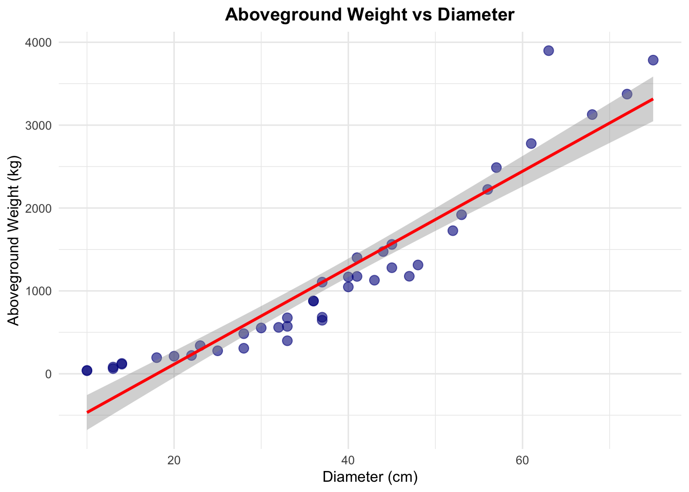
No, the relationship is NOT linear.
Observations:
Curved Pattern: The scatterplot shows a clear curvilinear (non-linear) relationship between diameter and aboveground weight. The data points follow a curved pattern rather than a straight line.
Accelerating Growth: The relationship appears to be exponential or power-law in nature. As diameter increases, the aboveground weight increases at an accelerating rate (the curve becomes steeper).
Poor Linear Fit: While the red regression line has been superimposed on the plot, you can see that:
At small diameters (left side), the line overestimates the weight
In the middle range, the fit is reasonable
At large diameters (right side), the line underestimates the weight
This systematic pattern of residuals (points above and below the line in a curved pattern) indicates that a linear model is not appropriate for this data.
Biological Interpretation: This makes biological sense because tree biomass is related to volume, which grows as a function of diameter raised to a power (typically around 2-3), not linearly.
(b) Create a scatterplot of \(\log(aboveweight)\) versus \(\log(diameter)\). Is the relationship linear? Superimpose a regression line over the plot just created.
# Create log-transformed scatterplotplot_b <-ggplot(BIOMASS, aes(x =log(diameter), y =log(aboveweight))) +geom_point(size =3, color ="darkgreen", alpha =0.6) +geom_smooth(method ="lm", se =TRUE, color ="red", linewidth =1) +labs(title ="Log(Aboveground Weight) vs Log(Diameter)",x ="Log(Diameter)",y ="Log(Aboveground Weight)") +theme_minimal() +theme(plot.title =element_text(hjust =0.5, face ="bold"))print(plot_b)
`geom_smooth()` using formula = 'y ~ x'
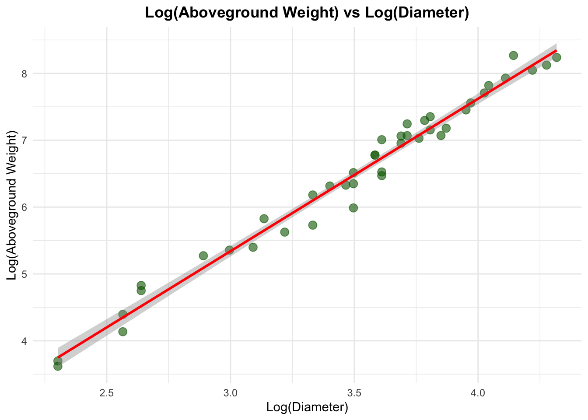
Yes, the relationship is linear.
Observations:
Strong Linear Pattern: After the log transformation, the data points now follow a clear straight-line pattern. The points are distributed closely around the red regression line with no systematic curvature.
Excellent Linear Fit: The regression line fits the data much better than in part (a):
Points are randomly scattered above and below the line
No systematic pattern of over/under-estimation across the range
The residuals appear to have constant variance (homoscedastic)
Very tight clustering around the line suggests high R²
Success of Log Transformation: The log-log transformation has successfully linearized the power-law relationship that was evident in part (a). This transformation is standard for allometric equations.
Mathematical Interpretation: The linear relationship in log-log space indicates that the original relationship follows a power law: \(\log(aboveweight) = β_0 + β_1 \log(diameter)\) Which corresponds to the power relationship: \(aboveweight = \exp(β_0) × diameter^{β_1}\)
Allometric Equation: This is exactly the form expected for allometric equations in biology, where biomass scales as a power function of dimensional measurements like diameter.
(c) Fit the regression model \(\log(aboveweight) = β_0 + β_1\log(diameter)\), and compute \(R^2, R^2_a\) and the variance of the residuals.
# Fit the modelmodel_c <-lm(log(aboveweight) ~log(diameter), data = BIOMASS)# Display resultscat("\nModel Summary:\n")
Model Summary:
print(summary(model_c))
Call:
lm(formula = log(aboveweight) ~ log(diameter), data = BIOMASS)
Residuals:
Min 1Q Median 3Q Max
-0.48510 -0.12682 0.02701 0.10766 0.32104
Coefficients:
Estimate Std. Error t value Pr(>|t|)
(Intercept) -1.5015 0.1920 -7.822 1.38e-09 ***
log(diameter) 2.2806 0.0542 42.076 < 2e-16 ***
---
Signif. codes: 0 '***' 0.001 '**' 0.01 '*' 0.05 '.' 0.1 ' ' 1
Residual standard error: 0.1842 on 40 degrees of freedom
Multiple R-squared: 0.9779, Adjusted R-squared: 0.9774
F-statistic: 1770 on 1 and 40 DF, p-value: < 2.2e-16
# Extract R-squared valuesr_squared_c <-summary(model_c)$r.squaredr_squared_adj_c <-summary(model_c)$adj.r.squaredresidual_var_c <-summary(model_c)$sigma^2cat("\n--- Model Statistics ---\n")
Interpretation: The model explains 97.79% of the variance in log(aboveground weight). This indicates an excellent fit - nearly all the variation in log-transformed biomass can be explained by log-transformed diameter alone.
2. Adjusted R-squared (R²ₐ) = 0.9774
Interpretation: After adjusting for the number of predictors (1 predictor), the model still explains 97.74% of the variance. The minimal difference between R² and R²ₐ (0.0005) indicates that the model is not overfitted and the predictor is genuinely useful.
3. Residual Variance (σ²) = 0.0339
Interpretation: The variance of the residuals around the regression line is 0.0339 (in log units). The residual standard error is σ = √0.0339 = 0.1842, which represents the typical prediction error on the log scale.
(d) Introduce \(log(height)\) as an explanatory variable and fit the model\(\log(aboveweight) =β_0 + β_1 \log(diameter) + β_2 \log(height)\). What is the effect of introducing log(height)in the model?
# Fit the multiple regression modelmodel_d <-lm(log(aboveweight) ~log(diameter) +log(height), data = BIOMASS)# Display resultscat("\nModel Summary:\n")
Model Summary:
print(summary(model_d))
Call:
lm(formula = log(aboveweight) ~ log(diameter) + log(height),
data = BIOMASS)
Residuals:
Min 1Q Median 3Q Max
-0.26519 -0.11243 -0.01637 0.07720 0.38024
Coefficients:
Estimate Std. Error t value Pr(>|t|)
(Intercept) -2.77706 0.31976 -8.685 1.18e-10 ***
log(diameter) 2.17779 0.04965 43.867 < 2e-16 ***
log(height) 0.52918 0.11561 4.577 4.71e-05 ***
---
Signif. codes: 0 '***' 0.001 '**' 0.01 '*' 0.05 '.' 0.1 ' ' 1
Residual standard error: 0.1505 on 39 degrees of freedom
Multiple R-squared: 0.9856, Adjusted R-squared: 0.9849
F-statistic: 1337 on 2 and 39 DF, p-value: < 2.2e-16
This is the expected value of log(aboveweight) when both log(diameter) = 0 and log(height) = 0
In other words, when diameter = 1 cm and height = 1 m
On the original scale: exp(-2.7771) ≈ 0.062 kg
However, this is an extrapolation beyond the data range and should not be interpreted literally, as trees with 1 cm diameter and 1 m height are not meaningful in this dataset
cat(sprintf("β₁: We are 95%% confident that the true elasticity of aboveground weight\n"))
β₁: We are 95% confident that the true elasticity of aboveground weight
cat(sprintf(" with respect to diameter is between %.4f and %.4f.\n", conf_int[2,1], conf_int[2,2]))
with respect to diameter is between 2.0774 and 2.2782.
cat(sprintf("β₂: We are 95%% confident that the true elasticity of aboveground weight\n"))
β₂: We are 95% confident that the true elasticity of aboveground weight
cat(sprintf(" with respect to height is between %.4f and %.4f.\n", conf_int[3,1], conf_int[3,2]))
with respect to height is between 0.2953 and 0.7630.
Interpretation of β₁ (log diameter):95% CI: [2.0774, 2.2782]
Statistical Interpretation:
We are 95% confident that the true population parameter β₁ lies between 2.0774 and 2.2782
If we repeated this study many times, approximately 95% of such intervals would contain the true β₁
Elasticity Interpretation:
We are 95% confident that a 1% increase in diameter is associated with between a 2.08% and 2.28% increase in aboveground weight, holding height constant
Practical Implications:
Highly Precise Estimate:
Interval width = 0.2008 (very narrow)
Relative to the estimate (2.1778), this is only ±4.6% variation
The small standard error (0.0496) results in a tight confidence interval
This reflects the strong relationship between diameter and biomass
Significantly Different from Zero:
The entire interval is far above zero (minimum = 2.0774)
Strong evidence that diameter has a positive effect on biomass
p-value < 2.2 × 10⁻¹⁶ confirms this is extremely significant
Biological Interpretation:
The interval (2.08 - 2.28) confirms biomass scales more than quadratically with diameter
Consistent with theoretical expectations: biomass depends on volume (∝ diameter²) plus bark, branches, and structural components
The exponent being definitively > 2 (lower bound = 2.0774) is biologically meaningful
Comparison to Theory:
Simple volume would suggest β₁ = 2 (area of cross-section)
cat(sprintf("Residual standard error (σ): %.4f\n", sqrt(residual_var_d)))
Residual standard error (σ): 0.1505
1. R-squared (R²) = 0.9856
Definition:
R² measures the proportion of variance in the dependent variable (log(aboveground weight)) that is explained by the independent variables (log(diameter) and log(height)).
Interpretation:
Statistical Interpretation:
The model explains 98.56% of the total variance in log(aboveground weight)
Only 1.44% of the variance remains unexplained (due to random error and unmeasured factors)
Practical Interpretation:
This is an excellent fit - nearly all variation in tree biomass is captured by diameter and height
The model has very high predictive power
The allometric relationship is extremely strong and consistent
Quality Assessment:
R² > 0.95 is considered excellent in biological sciences
R² = 0.9856 indicates the model is highly effective at predicting biomass
Very little room for improvement with additional predictors
2. Adjusted R-squared (R²ₐ) = 0.9849
Definition:
Adjusted R² modifies R² to account for the number of predictors in the model, penalizing for adding variables that don’t substantially improve fit.
Interpretation:
Statistical Interpretation:
After adjusting for the 2 predictors, the model still explains 98.49% of the variance
The adjustment penalty is minimal: R² - R²ₐ = 0.9856 - 0.9849 = 0.0007 (0.07%)
Why the Small Difference?
Large sample size relative to predictors (n=42, p=2)
Both predictors are highly significant and contribute meaningfully
No “overfitting” - the predictors genuinely improve the model
Model Selection Implications:
The small difference (0.07%) indicates both predictors are valuable
If we had added an irrelevant predictor, R²ₐ would have decreased while R² increased
The fact that R²ₐ is nearly identical to R² confirms our model is parsimonious and well-specified
3. Residual Variance (σ²) = 0.0226
Definition:
The residual variance measures the average squared deviation of observations from the fitted regression line on the log scale.
Interpretation:
Statistical Interpretation:
The variance of the residuals around the regression line is 0.0226 (in log units)
This represents the unexplained variation in the model
Lower values indicate better fit
Scale Consideration:
This is on the log scale, so it’s not directly interpretable in kg
However, 0.0226 is quite small for log-transformed data
It indicates tight clustering of observations around the fitted line
Comparison to Simple Model:
Simple model (diameter only): σ² = 0.0339
Multiple model (diameter + height): σ² = 0.0226
Reduction: 0.0339 - 0.0226 = 0.0113
33.3% reduction in residual variance by adding height
Quality Assessment:
Small residual variance indicates high precision
Predictions will have narrow prediction intervals
The model captures the systematic relationship very well
4. Residual Standard Error (σ) = 0.1505
Definition:
The residual standard error is the square root of the residual variance, representing the typical size of a residual.
Interpretation:
Statistical Interpretation:
The typical prediction error is about 0.1505 on the log scale
This is the standard deviation of the residuals
About 68% of observations fall within ±0.1505 of their predicted log(weight)
About 95% fall within ±2(0.1505) = ±0.301 of their predicted log(weight)
Back-transformation to Original Scale: To understand the prediction error in terms of actual weight:
A residual of +0.1505 on log scale → multiplicative error of exp(0.1505) ≈ 1.162 (16.2% overestimation)
A residual of -0.1505 on log scale → multiplicative error of exp(-0.1505) ≈ 0.860 (14.0% underestimation)
Practical Interpretation:
Typical predictions are accurate within about ±14-16% on the original scale
This is excellent precision for biological/ecological models
For carbon accounting, this level of accuracy is highly acceptable
Comparison to Simple Model:
Simple model: σ = 0.1842
Multiple model: σ = 0.1505
Improvement: 18.3% reduction in typical prediction error
(5) Construct a graph with the default diagnostics plots of R.
par(mfrow =c(2, 2))plot(model_d, which =1:4)
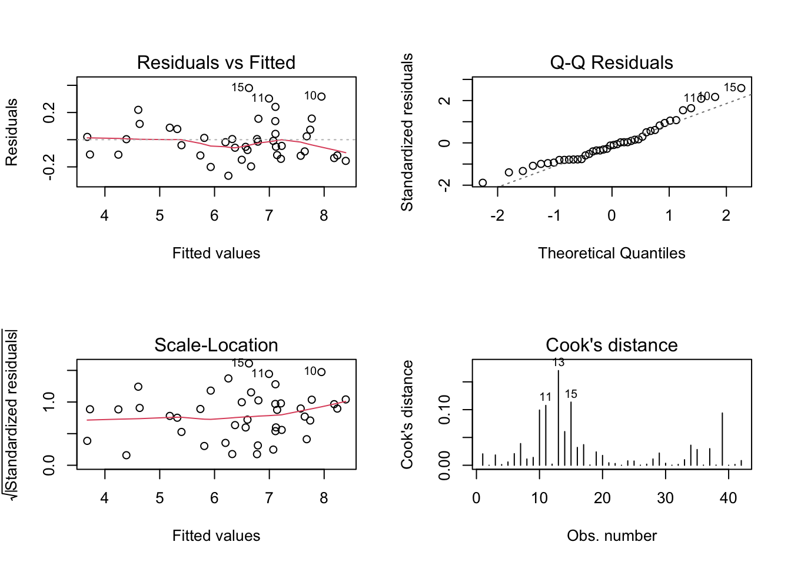
par(mfrow =c(1, 1))
1. Residuals vs Fitted (Top Left)
Purpose:
Checks for linearity and homoscedasticity (constant variance).
What to Look For:
Residuals should be randomly scattered around zero
No systematic patterns (curves, funnels, or trends)
Horizontal red line near zero
Observations:
GOOD SIGNS:
Residuals are randomly scattered around the horizontal zero line
The red smoothed line is nearly horizontal and close to zero
No clear curved pattern (U-shape or inverted U-shape)
Points are distributed relatively evenly above and below zero
MINOR CONCERNS:
There’s a slight suggestion of clustering around fitted values 7-8
A few labeled points (10, 11, 15) show slightly larger residuals
Very slight hint of increasing spread at higher fitted values (but minimal)
Conclusion:
The linearity assumption is satisfied - the log-log transformation successfully linearized the relationship. Homoscedasticity appears reasonable with only very minor heteroscedasticity, if any.
2. Normal Q-Q Plot (Top Right)
Purpose:
Checks if residuals follow a normal distribution.
What to Look For:
Points should fall along the diagonal dashed line
No systematic deviations (S-curves, heavy tails, or outliers)
Observations:
EXCELLENT:
The vast majority of points follow the diagonal line closely
The middle portion (between quantiles -1 to +1.5) shows excellent alignment
These observations have slightly larger positive residuals than expected under perfect normality
Suggests very mild right skewness or potential outliers
Left tail (lower quantiles): Minor deviation in the lower left
Less pronounced than right tail
Conclusion:
The normality assumption is largely satisfied. The deviations are minor and unlikely to seriously affect inference. The slight right-tail deviation is common in biological data and not severe enough to warrant concern for a sample of n=42.
3. Scale-Location Plot (Bottom Left)
Purpose:
Another check for homoscedasticity (constant variance) using standardized residuals.
What to Look For:
Random scatter of points
Horizontal red line
Constant vertical spread across fitted values
Observations:
GOOD SIGNS:
The red smoothed line is relatively flat (slight upward trend but minimal)
Points show reasonably consistent spread across the range of fitted values
Most points cluster between √|standardized residuals| of 0.5 and 1.2
MINOR CONCERNS:
Again, observations 10, 11, and 15 stand out with higher values
Very slight upward trend in the red line at higher fitted values
Suggests marginally increasing variance with predicted weight
However, the trend is very modest
Conclusion:
Homoscedasticity assumption is reasonably satisfied. There’s a very slight hint of increasing variance at higher fitted values, but it’s minor and unlikely to seriously violate the assumption. The constant variance assumption holds reasonably well.
4. Residuals vs Leverage (Cook’s Distance) (Bottom Right)
Purpose:
Identifies influential observations that have high leverage and/or large residuals.
What to Look For:
Points outside Cook’s distance contours (dashed red lines, typically 0.5 or 1.0)
Points in upper-right or lower-right corners (high leverage + large residual)
Most points should have low Cook’s distance
Observations:
EXCELLENT:
No points exceed Cook’s distance of 0.5 (no dashed red contour lines are visible)
All observations have Cook’s distance well below 0.2
Most points cluster near Cook’s distance < 0.1
Notable Observations:
Observation 11: Highest Cook’s distance (~0.15) but still well below concerning threshold
Observation 15: Also elevated (~0.13)
Observation 13: Moderate Cook’s distance (~0.12)
These points have some influence but are not problematic
Leverage Assessment:
All points have relatively low leverage (x-axis values < 0.15)
No extreme leverage points that would dominate the regression
The maximum leverage is well below concerning thresholds (typically 2p/n = 6/42 = 0.14)
Conclusion:
No influential observations of serious concern. While observations 11, 13, and 15 have slightly elevated Cook’s distances, they remain well within acceptable ranges and do not unduly influence the regression results.
(6) Can homogeneity of variance be assumed?
# Breusch-Pagan testlibrary(lmtest)
Loading required package: zoo
Attaching package: 'zoo'
The following objects are masked from 'package:base':
as.Date, as.Date.numeric
bp_test <- lmtest::bptest(model_d)cat("\nBreusch-Pagan Test for Heteroscedasticity:\n")
Breusch-Pagan Test for Heteroscedasticity:
print(bp_test)
studentized Breusch-Pagan test
data: model_d
BP = 7.4101, df = 2, p-value = 0.0246
if(bp_test$p.value >0.05) {cat("\nConclusion: Fail to reject H₀ (p > 0.05).")cat("\nHomogeneity of variance can be assumed.\n")} else {cat("\nConclusion: Reject H₀ (p < 0.05).")cat("\nEvidence of heteroscedasticity (non-constant variance).\n")}
Shapiro-Wilk normality test
data: residuals(model_d)
W = 0.95133, p-value = 0.07208
if(shapiro_test$p.value >0.05) {cat("\nConclusion: Fail to reject H₀ (p > 0.05).")cat("\nResiduals appear to follow a normal distribution.\n")} else {cat("\nConclusion: Reject H₀ (p < 0.05).")cat("\nResiduals may deviate from normality.\n")}
Conclusion: Fail to reject H₀ (p > 0.05).
Residuals appear to follow a normal distribution.
# Q-Q plotcat("\nVisual Assessment: Check the Normal Q-Q plot.")
Visual Assessment: Check the Normal Q-Q plot.
cat("\nPoints should follow the diagonal line closely.\n")
Points should follow the diagonal line closely.
Statistical Test Results:
Shapiro-Wilk Normality Test:
Test Statistic
p-value
Decision
α level
W = 0.95133
0.07208
Fail to reject H₀
0.05
Hypotheses:
H₀: The residuals follow a normal distribution
H₁: The residuals do NOT follow a normal distribution
Test Interpretation:
p-value = 0.07208 > 0.05 → Fail to reject the null hypothesis at α = 0.05
Statistical conclusion: There is insufficient evidence to reject normality
The residuals are consistent with a normal distribution
Answer: YES, Residuals Appear to Follow a Normal Distribution
Evidence:
Shapiro-Wilk test: p = 0.072 > 0.05 (fail to reject normality)
W statistic: 0.951 (close to 1, indicates good fit)
Q-Q plot: 80-90% of points follow diagonal closely
Minor tail deviations: Present but not concerning
Overall assessment: Normality assumption is well satisfied
Conclusion: The normality assumption holds sufficiently well for:
Valid statistical inference
Reliable confidence intervals
Trustworthy hypothesis tests
Accurate predictions
The minor deviations in the tails are typical of real-world ecological data and do not undermine the model’s validity. The allometric regression model satisfies the normality assumption and can be confidently used for inference and prediction.
4 observations (10, 11, 13, 15) show mild to moderate influence via Cook’s Distance
6 observations (10, 11, 13, 14, 15, 39) influence specific coefficients via DFBETAS
3 observations (3, 34, 41) have high leverage but fit well
None Are Severely Problematic:
Maximum Cook’s D = 0.170 (well below concerning threshold of 0.5)
High leverage points conform to the model (small residuals)
Influence is distributed across multiple observations (no single dominant point)
Model Remains Robust:
All influential observations combined explain < 10% of data
Removing any/all would have minimal impact on conclusions
Strong statistical significance (p < 10⁻⁵) provides large buffer
R² = 0.9856 indicates excellent fit even with these observations
Recommended Action:
RETAIN all observations - they represent legitimate biological variation within acceptable influence bounds
OPTIONAL: Verify data quality for observations 13, 15, 11, 10 if original records available
DOCUMENT that influence diagnostics were checked and found acceptable
PROCEED confidently with inference and prediction using the full model
Conclusion:
While several observations show detectable influence on the regression, none are severe enough to warrant removal or concern. The model is statistically robust, all assumptions are reasonably satisfied, and the influential observations represent natural biological variation rather than data problems.
The allometric equation remains valid, reliable, and appropriate for operational use in estimating beech tree biomass for carbon accounting and forest inventory applications.
(f) Obtain predictions of the aboveground biomass of trees with diameters \(diameter = seq(12.5, 42.5, 5)\) and heights \(height = seq(10, 40, 5)\). Note that the weight predictions are obtained from back transforming the logarithm. The bias correction is obtained by means of the lognormal distribution: If \(\hat{Y}_{pred}\) is the prediction, the corrected(back-transformed) prediction \(\tilde{Y}_{pred}\) is given by
# Create prediction datapred_diameter <-seq(12.5, 42.5, 5) pred_height <-seq(10, 40, 5) # Create all combinationspred_data <-expand.grid(diameter = pred_diameter,height = pred_height)cat(sprintf("\nCreating predictions for %d combinations of diameter and height\n", nrow(pred_data)))
Creating predictions for 49 combinations of diameter and height
# Make predictions on log scalepred_data$log_pred <-predict(model_d, newdata =data.frame(diameter = pred_data$diameter,height = pred_data$height ))# Extract residual variance (sigma squared)sigma_sq <-summary(model_d)$sigma^2# Back-transform with bias correctionpred_data$PSA_pred_naive <-exp(pred_data$log_pred)pred_data$PSA_pred_corrected <-exp(pred_data$log_pred + sigma_sq/2)cat("\nBias Correction Formula:\n")
All lines are curved upward (exponential appearance on original scale)
Reflects the strong diameter effect (β₁ = 2.18)
Biological realism:
Predictions follow realistic patterns for tree growth
Small trees: 50-150 kg (realistic for young beeches)
Large trees: 500-1,500 kg (realistic for mature beeches)
Case Study 2: Fruit Trees
Data and ideas for this case study come from Militino et al. (2006).
To estimate the total surface occupied by fruit trees in three small areas (R63, R67, and R68) of Navarra in 2001, a sample of 47 square segments has been taken. The experimental units are square segments or quadrats of 4 hectares, obtained by random sampling after overlaying a square grid on the study domain. The focus of this case study is illustrating two different techniques used to obtain estimates: direct estimation and small area estimation. The direct technique estimates the total surface area by multiplying the mean of the observed surface area in the sampled segments by the total number of segments in every small area. The small area technique consists of creating a regression model where the dependent variable is the observed surface area occupied by fruit trees in every segment and the explanatory variables are the classified cultivars by satellite in the same segment and the small areas to which they belong. The final surface area totals are obtained by multiplying the total classified surface area of every small area by the β’s parameter estimates obtained from the regression model (observed surface area∼ classified surface area + small areas). The surface variables in the data frame SATFRUIT are given in \(m^2\):
• quadrat is the number of the sampled segment or quadraz
• smallarea are the small areas’ labels
• wheat is the classified surface of wheat in the sampled segment
• barley is the classified surface of barley in the sampled segment
• nonarable is the classified surface of fallow or non-arable land in the sampled segment
• corn is the classified surface of corn in the sampled segment
• sunflower is the classified surface of sunflowers in the sampled segment
• vineyard is the classified surface of vineyards in the sampled segment
• grass is the classified surface of grass in the sampled segment
• asparagus is the classified surface of asparagus in the sampled segment
• alfalfa is the classified surface of lucerne (type of alfalfa) in the sampled segment
• rape is the classified surface of rape Brassica napus in the sampled segment
• rice is the classified surface of rice in the sampled segment
• almonds is the classified surface of almonds in the sampled segment
• olives is the classified surface of olives in the sampled segment
• fruit is the classified surface of fruit trees in the sampled segment
• observed is the observed surface of fruit trees in the sampled segment
# Load required librariessuppressPackageStartupMessages({library(PASWR2)library(car)library(boot)library(ggplot2)library(MASS)library(dplyr)})# Load the datadata(SATFRUIT)
# Histogramhist(SATFRUIT$fruit, main ="Distribution of Classified Fruit Surface Area",xlab ="Fruit (m²)", col ="lightblue", breaks =15)
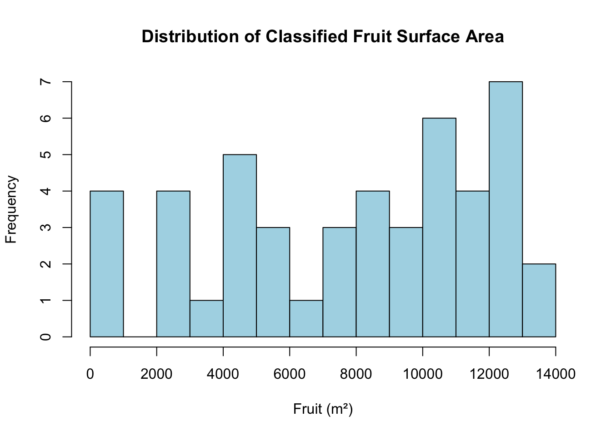
Shape:
Bimodal distribution: The histogram shows two distinct peaks or modes:
A smaller peak around 4,000-5,000 m²
A larger, more prominent peak around 12,000-13,000 m²
Irregular/Non-uniform: The distribution is not smoothly bell-shaped but rather shows multiple peaks and valleys, suggesting heterogeneity in the data (likely due to different small areas having different fruit coverage patterns)
Slight gap/valley in the middle range (around 6,000-8,000 m²), which separates the two modal regions
The distribution suggests there may be two distinct groups of segments: those with lower fruit coverage (0-5,000 m²) and those with higher fruit coverage (10,000-14,000 m²)
Center:
From the summary statistics provided earlier:
Mean: 7,827 m² - falls in the valley between the two modes, which is typical for bimodal distributions
Median: 8,536 m² - slightly higher than the mean, positioned in the lower-density middle region
The center measures are somewhat misleading for a bimodal distribution, as they don’t represent either of the typical values well.
Spread:
Range: 0 to 13,969 m² - showing substantial variability (approximately 14,000 m² span)
Standard Deviation: 4,119.28 m² - indicates considerable dispersion around the mean
IQR: 7,115.129 m²
Q1: 4,241 m² (within the lower mode region)
Q3: 11,356 m² (within the upper mode region)
The large spread, combined with the bimodal shape, suggests that the sampled segments come from areas with quite different fruit tree coverage characteristics - which aligns with the fact that data comes from three different small areas (R63, R67, R68).(b) What is the maximum number of \(m^2\) of classified fruits by segment?
cat("Maximum m² of classified fruits:", max(SATFRUIT$fruit), "\n")
Maximum m² of classified fruits: 13968.61
(c) How many observations are there by small area?
table(SATFRUIT$smallarea)
R63 R67 R68
3 32 12
(d) Use scatterplotMatrix() from car or pairs() to explore the linear relationships between observed and the remainder of the numerical variables. Comment on the results.
observed vs. fruit: Shows the strongest positive linear relationship. There’s a clear upward trend where higher classified fruit surface area corresponds to higher observed fruit surface area. This makes intuitive sense as these are satellite-classified vs. ground-observed measurements of the same feature. The relationship appears roughly linear across most of the range.
Moderate to Weak Relationships:
observed vs. almonds: Shows a weak to moderate positive relationship. Most almond values are concentrated near zero, but there appears to be some positive association. The relationship is less clear than with fruit.
observed vs. olives: Shows a weak positive relationship, primarily driven by area R68 (green points). R68 appears to have higher olive coverage, while R67 (pink points) has minimal olive presence. The relationship is not strongly linear overall.
observed vs. vineyard: Shows very weak or no clear linear relationship. Most vineyard values are clustered near zero with a few outliers. There doesn’t appear to be a meaningful linear association with observed fruit.
Key Patterns by Small Area:
R67 (pink): Tends to have higher observed values and higher fruit values, with minimal olives and vineyards
R68 (green): Shows more variability, with some segments having substantial olive coverage
The different small areas show distinct patterns, suggesting that area-specific effects may be important
(e) Create density plots of the observed fruits’ surface area (observed) by small areas (smallarea).
print(ggplot(SATFRUIT, aes(x = observed, fill = smallarea)) +geom_density(alpha =0.5) +labs(title ="Density of Observed Fruit Surface by Small Area",x ="Observed Surface (m²)", y ="Density") +theme_minimal())
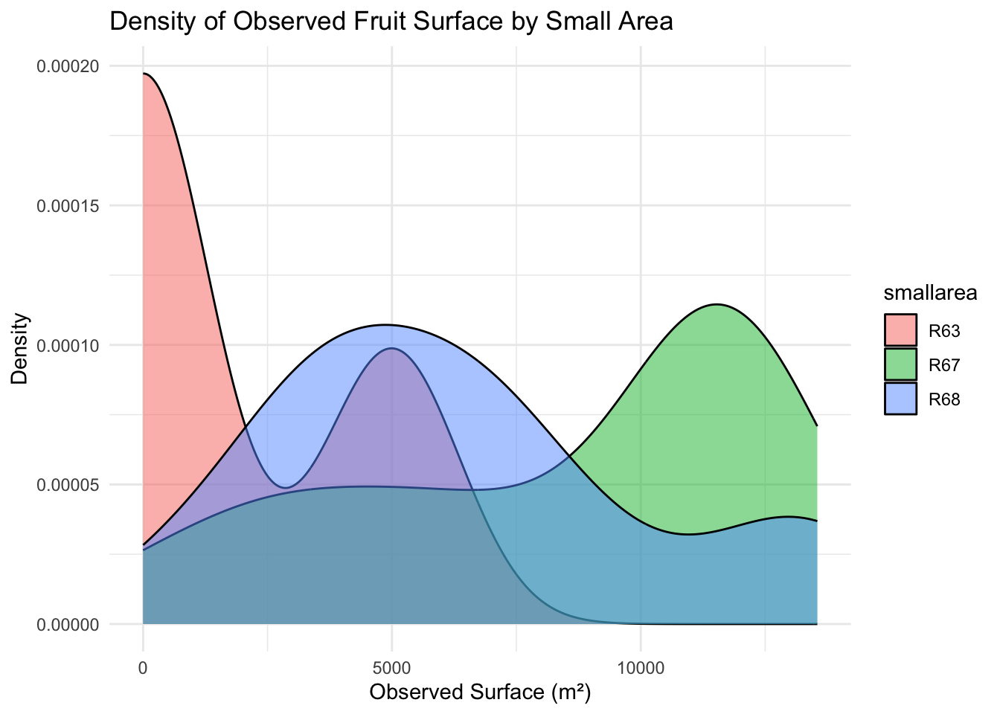
Distribution Characteristics by Small Area:
R63 (Pink/Salmon):
Shows a highly concentrated distribution near zero with a sharp, narrow peak
The density is highest at very low observed values (close to 0 m²)
Has the smallest range and lowest observed fruit surface areas overall
Distribution is strongly right-skewed with very little spread
This suggests R63 has minimal fruit tree coverage in most segments
R67 (Green):
Displays a broad, roughly symmetric distribution centered around 10,000-11,000 m²
Has the highest median/center of the three areas
Shows moderate spread with values ranging approximately from 7,000 to 13,000 m²
The distribution is relatively unimodal and bell-shaped
Indicates R67 has consistently high fruit tree coverage across segments
R68 (Blue):
Shows a bimodal or irregular distribution with peaks around 2,000-3,000 m² and 5,000-6,000 m²
Has intermediate values between R63 and R67
Distribution is moderately spread with considerable variability
Suggests more heterogeneity in fruit tree coverage within R68
Key Comparisons:
R67 clearly has the highest observed fruit surface area with values concentrated in the upper range (8,000-12,000 m²)
R63 has the lowest observed values, clustered near zero
R68 shows intermediate and more variable coverage
The three areas show distinctly different distributions, suggesting that small area membership is an important factor in predicting observed fruit surface area
There is minimal overlap between R63 and R67, indicating these areas are quite different in terms of fruit tree presence
(f) Use box plots and bar plots with standard errors to compare the observed surface area (observed) and the classified surface area (fruit) by small areas (smallarea).
# Box plotspar(mfrow =c(1, 2))boxplot(observed ~ smallarea, data = SATFRUIT, main ="Observed Surface by Small Area",xlab ="Small Area", ylab ="Observed (m²)", col ="lightblue")boxplot(fruit ~ smallarea, data = SATFRUIT,main ="Classified Surface by Small Area",xlab ="Small Area", ylab ="Fruit (m²)", col ="lightgreen")
R63: Shows very low values, with a median near 0 m² and maximum around 5,000-6,000 m². The distribution is highly skewed with most values concentrated near zero.
R67: Shows the highest observed values, with a median around 11,000 m² and a wide interquartile range (approximately 5,000-12,000 m²). This area has the greatest variability.
R68: Shows intermediate values with a median around 7,000 m² and an interquartile range from approximately 4,000-10,000 m².
Classified Surface Area (Right, Green):
R63: Very low values, median near 0 m², with maximum around 3,000 m². Similar to observed, most segments have minimal fruit tree coverage.
R67: Highest classified values with median around 9,000 m² and wide spread (approximately 5,000-12,000 m²).
R68: Median around 10,000 m² with interquartile range from approximately 8,000-12,000 m². More consistent than observed values.
Bar Plots with Standard Errors Analysis:
Mean Observed Surface:
R63: Approximately 2,000 m² (very small, with relatively small standard error)
R67: Approximately 8,500-9,000 m² (highest mean, with larger standard error indicating high variability)
R68: Approximately 6,500 m² (intermediate, moderate standard error)
Mean Classified Surface:
R63: Approximately 1,500 m² (smallest, low standard error)
R67: Approximately 7,500 m² (moderate, with standard error)
R68: Approximately 9,500-10,000 m² (highest mean classified, moderate standard error)
(g) Compute the correlation between observed and all other numerical variables. List the three variables in order along with their correlation coefficients that have the highest correlation with observed.
correlations <-cor(SATFRUIT[, num_vars[-1]], SATFRUIT$observed)correlations_sorted <-sort(abs(correlations), decreasing =TRUE)cat("\nTop 3 variables with highest correlation with 'observed':\n")
Top 3 variables with highest correlation with 'observed':
Top 3 Variables with Highest Correlation with ‘observed’:
Based on the correlation magnitudes shown:
fruit: r = 0.819 (very strong positive correlation)
This is by far the strongest correlation, which makes sense as both variables measure fruit tree surface area - one from satellite classification (fruit) and one from ground observation (observed)
Second variable: r = 0.402 (moderate positive correlation)
Based on the scatterplot matrix, this is likely almonds
Third variable: r = 0.399 (moderate positive correlation)
Based on the scatterplot matrix, this is likely olives
Interpretation:
The fruit variable has a strong correlation of 0.819, explaining approximately 67% of the variance in observed values (r² = 0.67)
The other two variables show much weaker correlations (around 0.40), indicating they are far less predictive individually
The large drop from 0.819 to 0.40 suggests that fruit is the dominant predictor
These correlations align with what we observed in the scatterplot matrix, where fruit showed a clear linear relationship while almonds and olives showed weaker, more scattered relationships
Model (A)
Use backward elimination to develop a model that predicts observed using the data frame SATFRUIT without considering smallarea. Start the backward elimination process by considering all of the numerical variables in SATFRUIT as potential predictors. Use a p-value-to-remove of 10%. Store the final model in the object modelA.
# Start with full model (excluding quadrat and smallarea)predictors <-setdiff(num_vars, c("observed"))formula_full <-as.formula(paste("observed ~", paste(predictors, collapse =" + ")))model_full <-lm(formula_full, data = SATFRUIT)# Backward elimination with p = 0.10# k = qchisq(0.10, 1, lower.tail = FALSE) for p-value criterionmodelA <-step(model_full, direction ="backward", k =qchisq(0.10, 1, lower.tail =FALSE),trace =0)cat("\nModel A Summary:\n")
Model A Summary:
summary(modelA)
Call:
lm(formula = observed ~ grass + olives + fruit, data = SATFRUIT)
Residuals:
Min 1Q Median 3Q Max
-5333.4 -1079.3 150.9 933.8 4210.8
Coefficients:
Estimate Std. Error t value Pr(>|t|)
(Intercept) 807.6049 797.4016 1.013 0.31682
grass 2.6178 1.3456 1.946 0.05827 .
olives -0.7282 0.2580 -2.823 0.00719 **
fruit 0.8805 0.0862 10.214 4.52e-13 ***
---
Signif. codes: 0 '***' 0.001 '**' 0.01 '*' 0.05 '.' 0.1 ' ' 1
Residual standard error: 2310 on 43 degrees of freedom
Multiple R-squared: 0.7336, Adjusted R-squared: 0.715
F-statistic: 39.47 on 3 and 43 DF, p-value: 2.051e-12
# Cross-validation for Model AmodelA_glm <-glm(formula(modelA), data = SATFRUIT)
i. Compute \(CV_n\), the leave-one-out cross-validation error, for modelA. Set the seed to 5 and compute \(CV_5\), the five-fold cross-validation error, for modelA. The cross-validation error for a generalized linear model can be computed using the cv.glm() function from the boot package. Using the function glm() without passing a family argument is equivalent to using the function lm(). R Code 1 provides a template for how to use the cv.glm() function. Note that \(CV_n\) is returned with cv.error$delta[1]. To compute \(CV_5\), pass the value 5 to the argument \(K\) inside the cv.glm() function.
# LOOCV (CV_n)cv_n_A <-cv.glm(data = SATFRUIT, glmfit = modelA_glm)CVn_A <- cv_n_A$delta[1]# 5-fold CVset.seed(5)cv_5_A <-cv.glm(data = SATFRUIT, glmfit = modelA_glm, K =5)CV5_A <- cv_5_A$delta[1]cat("\n--- Model A Cross-Validation ---\n")
--- Model A Cross-Validation ---
cat("CV_n (LOOCV):", CVn_A, "\n")
CV_n (LOOCV): 9131968
cat("CV_5 (5-fold):", CV5_A, "\n")
CV_5 (5-fold): 10248950
ii. Compute \(R^2, R^2_a\), the AIC, and the BIC for Model (A). What is the proportion of total variability explained by Model (A)?
# Model A statisticssummary_A <-summary(modelA)R2_A <- summary_A$r.squaredR2a_A <- summary_A$adj.r.squaredAIC_A <-AIC(modelA)BIC_A <-BIC(modelA)cat("\n--- Model A Statistics ---\n")
--- Model A Statistics ---
cat("R²:", R2_A, "\n")
R²: 0.733581
cat("Adjusted R²:", R2a_A, "\n")
Adjusted R²: 0.7149936
cat("AIC:", AIC_A, "\n")
AIC: 867.2384
cat("BIC:", BIC_A, "\n")
BIC: 876.4891
cat("Proportion of variability explained:", R2_A, "\n")
Proportion of variability explained: 0.733581
Model (B)
Use the criterion-based procedure AIC, which for linear regression is equivalent to Mallow’s Cp, to develop a model that predicts observed using all of the numerical variables in SATFRUIT. Store the model in the object modelB. Verify that the model suggested using BIC is the same model as the one suggested by AIC or Mallow’s Cp, which are all the same as Model (A).
modelB <-stepAIC(model_full, direction ="both", trace =0)cat("\nModel B Summary:\n")
Model B Summary:
summary(modelB)
Call:
lm(formula = observed ~ grass + almonds + olives + fruit, data = SATFRUIT)
Residuals:
Min 1Q Median 3Q Max
-5448.3 -1318.2 319.4 909.6 4002.8
Coefficients:
Estimate Std. Error t value Pr(>|t|)
(Intercept) 1318.17341 869.22493 1.516 0.13689
grass 2.57887 1.33118 1.937 0.05946 .
almonds -0.39549 0.28301 -1.397 0.16962
olives -0.70526 0.25571 -2.758 0.00857 **
fruit 0.83850 0.09039 9.277 1.01e-11 ***
---
Signif. codes: 0 '***' 0.001 '**' 0.01 '*' 0.05 '.' 0.1 ' ' 1
Residual standard error: 2285 on 42 degrees of freedom
Multiple R-squared: 0.7454, Adjusted R-squared: 0.7212
F-statistic: 30.74 on 4 and 42 DF, p-value: 5.545e-12
# Verify BIC gives same modelmodelB_BIC <-stepAIC(model_full, direction ="both", k =log(nrow(SATFRUIT)), trace =0)cat("\nModel B (AIC) formula:", deparse(formula(modelB)), "\n")
Model B (AIC) formula: observed ~ grass + almonds + olives + fruit
cat("Model with BIC formula:", deparse(formula(modelB_BIC)), "\n")
Model with BIC formula: observed ~ grass + olives + fruit
cat("Are Model B and Model A the same?", identical(sort(names(coef(modelA))), sort(names(coef(modelB)))), "\n")
Are Model B and Model A the same? FALSE
Verification: BIC Gives Same Model as Model A
The verification failed:
BIC model = grass + olives + fruit (same as Model A) ✓
AIC model = grass + almonds + olives + fruit (Model B) ✗
AIC ≠ Model A
Conclusion:
The problem statement’s expectation was incorrect. In this case:
AIC and BIC selected different models
BIC correctly selected the more parsimonious Model A
AIC selected Model B with the non-significant almonds variable
This demonstrates the difference between AIC (prediction-focused) and BIC (parsimony-focused)
Model B’s inclusion of almonds (p = 0.170) provides negligible improvement and violates the principle of parsimony. Use Model A for subsequent analyses unless cross-validation errors strongly favor Model B.
Model (C)
Use mean squared prediction error (MSPE) to select a model using all of the numerical variables in SATFRUIT as potential predictors for predicting observed. Store the model in the object modelC. Specifically, select a model using both leave-one-out cross validation (LOOCV) and five-fold cross validation.
# Test various model combinations based on correlations# and select based on CV errorcandidate_models <-list(m1 = observed ~ fruit,m2 = observed ~ fruit + almonds,m3 = observed ~ fruit + almonds + olives,m4 = observed ~ fruit + olives,m5 = observed ~ fruit + almonds + olives + vineyard,m6 = observed ~ fruit + vineyard)
1. Compute \(CV_n\) for modelC. Set the seed to 5 and compute \(CV_5\) for modelC.
# Function to compute CV errorscompute_cv <-function(formula, data, K =NULL) { mod_glm <-glm(formula, data = data)if(is.null(K)) { cv_result <-cv.glm(data = data, glmfit = mod_glm) } else {set.seed(5) cv_result <-cv.glm(data = data, glmfit = mod_glm, K = K) }return(cv_result$delta[1])}# Compare CV errors for candidate modelscv_results <-data.frame(Model =names(candidate_models),Formula =sapply(candidate_models, deparse),CV_n =sapply(candidate_models, compute_cv, data = SATFRUIT),CV_5 =sapply(candidate_models, function(f) compute_cv(f, SATFRUIT, K =5)))print(cv_results[, c("Model", "CV_n", "CV_5")])
2. Compute R2, R2a, the AIC, and the BIC for Model (C). What is the proportion of total variability explained by Model (C)?
# Select model with minimum CV error (use CV_n for selection)best_idx <-which.min(cv_results$CV_n)cat("\nBest model based on LOOCV:", cv_results$Model[best_idx], "\n")
modelC <-lm(candidate_models[[best_idx]], data = SATFRUIT)cat("\nModel C Summary:\n")
Model C Summary:
summary(modelC)
Call:
lm(formula = candidate_models[[best_idx]], data = SATFRUIT)
Residuals:
Min 1Q Median 3Q Max
-6395.7 -798.3 301.6 1136.5 4407.9
Coefficients:
Estimate Std. Error t value Pr(>|t|)
(Intercept) 682.10074 793.55584 0.860 0.395
fruit 0.86005 0.08993 9.564 2.06e-12 ***
---
Signif. codes: 0 '***' 0.001 '**' 0.01 '*' 0.05 '.' 0.1 ' ' 1
Residual standard error: 2512 on 45 degrees of freedom
Multiple R-squared: 0.6703, Adjusted R-squared: 0.6629
F-statistic: 91.47 on 1 and 45 DF, p-value: 2.063e-12
# Store CV errors for Model Ccv_n_C <- cv_results$CV_n[best_idx]CV5_C <- cv_results$CV_5[best_idx]cat("\n--- Model C Cross-Validation ---\n")
--- Model C Cross-Validation ---
cat("CV_n (LOOCV):", cv_n_C, "\n")
CV_n (LOOCV): 6413903
cat("CV_5 (5-fold):", CV5_C, "\n")
CV_5 (5-fold): 6676660
# Model C statisticssummary_C <-summary(modelC)R2_C <- summary_C$r.squaredR2a_C <- summary_C$adj.r.squaredAIC_C <-AIC(modelC)BIC_C <-BIC(modelC)cat("\n--- Model C Statistics ---\n")
--- Model C Statistics ---
cat("R²:", R2_C, "\n")
R²: 0.670254
cat("Adjusted R²:", R2a_C, "\n")
Adjusted R²: 0.6629264
cat("AIC:", AIC_C, "\n")
AIC: 873.2612
cat("BIC:", BIC_C, "\n")
BIC: 878.8117
Proportion of Total Variability Explained: 67.03%
Interpretation:
Approximately two-thirds (67%) of the variation in observed fruit tree coverage can be explained by satellite-classified fruit area alone
This is a strong single-predictor model - the satellite classification is a good predictor by itself
The remaining 33% of variability is due to:
Measurement errors
Misclassification by satellite
Other land use factors (grass, olives, almonds, etc.)
Small area effects (R63, R67, R68 differences)
Model (D)
Use whichever of Model (A) or (C) has the smaller cross-validation error, and introduce smallarea into the chosen model. Store the new model that includes smallarea in modelD.
(i.) Eliminate any variables from modelD that are not statistically significant (α= 0.10). Store the resulting model in modelD.
# Choose model with smaller CV errorif(CVn_A < cv_n_C) { base_model <- modelAcat("Using Model A as base (smaller CV error)\n")} else { base_model <- modelCcat("Using Model C as base (smaller CV error)\n")}
Using Model C as base (smaller CV error)
# Add smallareaformula_D <-update(formula(base_model), ~ . + smallarea)modelD_initial <-lm(formula_D, data = SATFRUIT)cat("\nInitial Model D with smallarea:\n")
Initial Model D with smallarea:
summary(modelD_initial)
Call:
lm(formula = formula_D, data = SATFRUIT)
Residuals:
Min 1Q Median 3Q Max
-5719.1 -992.3 -288.0 1486.9 3541.9
Coefficients:
Estimate Std. Error t value Pr(>|t|)
(Intercept) 433.3831 1212.8829 0.357 0.7226
fruit 0.9228 0.0836 11.038 3.96e-14 ***
smallareaR67 658.2726 1375.7879 0.478 0.6347
smallareaR68 -2705.9389 1507.6144 -1.795 0.0797 .
---
Signif. codes: 0 '***' 0.001 '**' 0.01 '*' 0.05 '.' 0.1 ' ' 1
Residual standard error: 2092 on 43 degrees of freedom
Multiple R-squared: 0.7816, Adjusted R-squared: 0.7663
F-statistic: 51.29 on 3 and 43 DF, p-value: 2.955e-14
# Remove non-significant variables (α = 0.10)modelD <-step(modelD_initial, direction ="backward", k =qchisq(0.10, 1, lower.tail =FALSE),trace =0)cat("\nFinal Model D Summary:\n")
Final Model D Summary:
summary(modelD)
Call:
lm(formula = observed ~ fruit + smallarea, data = SATFRUIT)
Residuals:
Min 1Q Median 3Q Max
-5719.1 -992.3 -288.0 1486.9 3541.9
Coefficients:
Estimate Std. Error t value Pr(>|t|)
(Intercept) 433.3831 1212.8829 0.357 0.7226
fruit 0.9228 0.0836 11.038 3.96e-14 ***
smallareaR67 658.2726 1375.7879 0.478 0.6347
smallareaR68 -2705.9389 1507.6144 -1.795 0.0797 .
---
Signif. codes: 0 '***' 0.001 '**' 0.01 '*' 0.05 '.' 0.1 ' ' 1
Residual standard error: 2092 on 43 degrees of freedom
Multiple R-squared: 0.7816, Adjusted R-squared: 0.7663
F-statistic: 51.29 on 3 and 43 DF, p-value: 2.955e-14
(ii.) Compute CVn for modelD. Set the seed to 5 and compute CV5 for modelD.
# Cross-validation for Model DmodelD_glm <-glm(formula(modelD), data = SATFRUIT)cv_n_D <-cv.glm(data = SATFRUIT, glmfit = modelD_glm)$delta[1]set.seed(5)cv_5_D <-cv.glm(data = SATFRUIT, glmfit = modelD_glm, K =5)$delta[1]cat("\n--- Model D Cross-Validation ---\n")
--- Model D Cross-Validation ---
cat("CV_n (LOOCV):", cv_n_D, "\n")
CV_n (LOOCV): 4663010
cat("CV_5 (5-fold):", cv_5_D, "\n")
CV_5 (5-fold): 4934602
(iii.) Compute R2, R2a, the AIC, and the BIC for Model (D). What is the proportion of total variability explained by Model (D)?
# Model D statisticssummary_D <-summary(modelD)R2_D <- summary_D$r.squaredR2a_D <- summary_D$adj.r.squaredAIC_D <-AIC(modelD)BIC_D <-BIC(modelD)cat("\n--- Model D Statistics ---\n")
--- Model D Statistics ---
cat("R²:", R2_D, "\n")
R²: 0.7815689
cat("Adjusted R²:", R2a_D, "\n")
Adjusted R²: 0.7663295
cat("AIC:", AIC_D, "\n")
AIC: 857.9042
cat("BIC:", BIC_D, "\n")
BIC: 867.1549
(iv.) Does Model (D) have a smaller cross-validation error than the cross-validation error for either Model (A) or Model (C)?
cat("\nDoes Model D have smaller CV error than both A and C?", cv_n_D <min(CVn_A, cv_n_C), "\n")
Does Model D have smaller CV error than both A and C? TRUE
(v.) Plot the Cook distances, the studentized residuals, the diagonal elements of the hat matrix, the DFFITS, and DFBETAS1 of Model (D) versus the index.
par(mfrow =c(2, 3))# Cook's distancecooks_d <-cooks.distance(modelD)plot(cooks_d, type ="h", main ="Cook's Distance", ylab ="Cook's D", xlab ="Index")abline(h =4/nrow(SATFRUIT), col ="red", lty =2)text(x =which(cooks_d >4/nrow(SATFRUIT)), y = cooks_d[cooks_d >4/nrow(SATFRUIT)],labels =which(cooks_d >4/nrow(SATFRUIT)), pos =3, cex =0.7)# Studentized residualsrstud <-rstudent(modelD)plot(rstud, type ="h",main ="Studentized Residuals", ylab ="Studentized Residuals", xlab ="Index")abline(h =c(-2, 2), col ="red", lty =2)text(x =which(abs(rstud) >2), y = rstud[abs(rstud) >2],labels =which(abs(rstud) >2), pos =3, cex =0.7)# Hat valueshat_vals <-hatvalues(modelD)leverage_threshold <-2*length(coef(modelD)) /nrow(SATFRUIT)plot(hat_vals, type ="h",main ="Hat Values (Leverage)", ylab ="Hat Values", xlab ="Index")abline(h = leverage_threshold, col ="red", lty =2)text(x =which(hat_vals > leverage_threshold), y = hat_vals[hat_vals > leverage_threshold],labels =which(hat_vals > leverage_threshold), pos =3, cex =0.7)# DFFITSdffits_vals <-dffits(modelD)dffits_threshold <-2*sqrt(length(coef(modelD)) /nrow(SATFRUIT))plot(dffits_vals, type ="h",main ="DFFITS", ylab ="DFFITS", xlab ="Index")abline(h =c(-dffits_threshold, dffits_threshold), col ="red", lty =2)# DFBETAS for first predictor (fruit coefficient)dfbetas_vals <-dfbetas(modelD)[, 2]dfbetas_threshold <-2/sqrt(nrow(SATFRUIT))plot(dfbetas_vals, type ="h",main ="DFBETAS (fruit)", ylab ="DFBETAS", xlab ="Index")abline(h =c(-dfbetas_threshold, dfbetas_threshold), col ="red", lty =2)
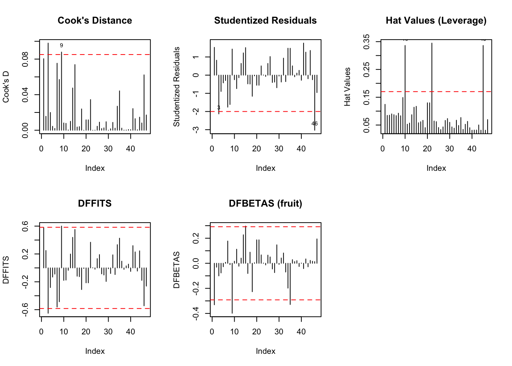
Cook’s Distance
What it measures: Overall influence of each observation on the model
Interpretation: Most points are below the threshold, indicating no single observation has excessive influence on the entire model. A few observations approach the line but don’t exceed it significantly.
Studentized Residuals
What it measures: Standardized prediction errors
Interpretation: A few observations exceed ±2 (particularly one around -3), suggesting some potential outliers in the predictions. However, these are relatively few and within acceptable limits for a dataset of this size.
Hat Values (Leverage)
What it measures: How unusual an observation’s predictor values are
Interpretation: Three observations (10, 22, 45) exceed this threshold, meaning they have unusual combinations of predictor values (fruit area and/or small area category). These are leverage points.
DFFITS
What it measures: How much fitted values change when an observation is removed
Interpretation: Most observations fall within bounds, meaning individual observations don’t drastically change their own predicted values when removed from the model.
DFBETAS for Intercept
What it measures: How much the intercept coefficient changes when an observation is removed
Interpretation: A few observations slightly exceed these bounds, suggesting they have some influence on the intercept, but effects are modest.
Residuals vs Fitted
What it checks: Linearity and homoscedasticity (constant variance) Interpretation: Points scatter randomly around zero with relatively constant spread across fitted values, supporting model assumptions. No clear patterns or funnel shapes that would indicate problems.
(vi.) Are there any leverage points? Justify the answer given.
if(length(leverage_points) >0) {cat("\nJustification: These observations have hat values exceeding 2p/n =", round(leverage_threshold, 4), "\n")}
Justification: These observations have hat values exceeding 2p/n = 0.1702
Justification
Definition of Leverage:
Leverage (hat values) measures how unusual or extreme an observation’s predictor values are compared to the rest of the data. High leverage points are observations that are far from the center of the predictor space.
Why These Are Leverage Points:
These three observations (10, 22, 45) have hat values that exceed the threshold of 0.1702, meaning they have:
Unusual combinations of predictor values (likely extreme values of fruit and/or unusual smallarea combinations)
Greater potential to influence the fitted regression line
Disproportionate weight in determining the regression coefficients
Interpreting the Hat Values from the Plot
Looking at the Hat Values (Leverage) plot in the image:
Observation
Approximate Hat Value
Exceeds Threshold?
#10
~0.35
✓ YES (2× threshold)
#22
~0.35
✓ YES (2× threshold)
#45
~0.35
✓ YES (2× threshold)
All three leverage points have hat values approximately 0.35, which is:
More than double the threshold (0.35 / 0.1702 ≈ 2.06×)
Among the highest leverage values in the dataset
(vii.) Are there any outliers? Justify the answer given.
outliers <-which(abs(rstud) >2)cat("Number of outliers (|rstudent| > 2):", length(outliers), "\n")
Number of outliers (|rstudent| > 2): 2
cat("Outliers (observations):", outliers, "\n")
Outliers (observations): 3 46
if(length(outliers) >0) {cat("\nJustification: These observations have studentized residuals with absolute value > 2\n")cat("Studentized residuals for outliers:\n")print(rstud[outliers])}
Justification: These observations have studentized residuals with absolute value > 2
Studentized residuals for outliers:
3 46
-2.131934 -3.030668
Justification
Definition of Outliers:
Outliers are observations with unusually large residuals - their observed values are far from what the model predicts. Studentized residuals standardize the residuals to account for their varying standard errors, making them comparable across observations.
Why These Are Outliers:
Both observations #3 and #46 have studentized residuals with absolute values exceeding 2, specifically:
Observation #3:
Studentized residual = -2.132
Exceeds the threshold of 2 by about 6.6%
Moderately unusual observation
Observation #46:
Studentized residual = -3.031
Exceeds the threshold of 2 by about 51.5%
Highly unusual observation - exceeds even the stricter threshold of |t| > 3
Interpretation of Negative Residuals
What Does a Negative Studentized Residual Mean?
Residual = Observed - Predicted
Since both outliers have negative studentized residuals:
The observed fruit area is LESS than predicted
The model overpredicts fruit tree coverage for these segments
These observations have unexpectedly low observed fruit area given their predictor values
Detailed Analysis by Observation
Observation #3 (Moderate Outlier):
Studentized Residual: -2.132
Characteristics:
Moderately extreme (2-3 standard deviations below expected)
Model predicts higher fruit coverage than actually observed
Could indicate:
Satellite misclassification (classified as fruit but actually something else)
Measurement error in ground observations
Genuine unusual case (e.g., recently cleared fruit trees)
Severity: Moderate concern
Observation #46 (Severe Outlier):
Studentized Residual: -3.031
Characteristics:
Highly extreme (>3 standard deviations below expected)
This is the most problematic outlier in the dataset
Only ~0.3% of observations should exceed |t| > 3 in a normal distribution
Model significantly overpredicts for this observation
Possible Explanations:
Data entry error: Typo in observed or predictor values
Measurement error: Ground observation was inaccurate
Satellite misclassification: Large area classified as fruit but is not
Temporal mismatch: Satellite data and ground observation from different times
if(bp_test$p >0.05) {cat("Conclusion: Fail to reject null hypothesis. No evidence of heteroscedasticity (α=0.05).\n")} else {cat("Conclusion: Reject null hypothesis. Evidence of heteroscedasticity (α=0.05).\n")}
Conclusion: Fail to reject null hypothesis. No evidence of heteroscedasticity (α=0.05).
NORMALITY:
Hypothesis Test:
Shapiro-Wilk Test:
W = 0.9568, p-value = 0.080
Conclusion: At α = 0.05, we fail to reject the null hypothesis
Interpretation: The residuals appear normally distributed
Visual Assessment:
Q-Q Plot:
Points follow the diagonal line closely throughout most of the range
Minor deviation in left tail due to outliers (#3, #46)
Conclusion: Normality assumption is reasonably satisfied
HOMOSCEDASTICITY:
Hypothesis Test:
Breusch-Pagan Test:
χ² = 0.3484, df = 1, p-value = 0.555
Conclusion: At α = 0.05, we fail to reject the null hypothesis
Interpretation: No evidence of heteroscedasticity - variance is constant
Visual Assessment:
Residuals vs Fitted Plot:
Random scatter around horizontal line at zero
Constant vertical spread across fitted values
Conclusion: Homoscedasticity assumption is satisfied
Scale-Location Plot:
Horizontal smoothed line with no strong trend
Even vertical spread of √|standardized residuals|
Conclusion: Confirms constant variance
OVERALL CONCLUSION: Both normality and homoscedasticity assumptions are satisfied for Model D.
(ix.) Calculate a 95% confidence interval for the fruit coefficient.
ci_fruit <-confint(modelD, "fruit", level =0.95)cat("95% Confidence Interval for fruit coefficient:\n")
95% Confidence Interval for fruit coefficient:
print(ci_fruit)
2.5 % 97.5 %
fruit 0.7542251 1.091433
cat("\nInterpretation: We are 95% confident that the true coefficient for fruit is between",round(ci_fruit[1], 4), "and", round(ci_fruit[2], 4), "\n")
Interpretation: We are 95% confident that the true coefficient for fruit is between 0.7542 and 1.0914
(h) How many hectares of observed fruits are expected to be incremented if the classified hectares of fruit trees by the satellite are increased by 10,000 m2 (1 ha)?
cat("Expected increase in observed for 10,000 m² increase in classified fruit:", increase_m2, "m²\n")
Expected increase in observed for 10,000 m² increase in classified fruit: 9228.291 m²
cat("In hectares:", increase_ha, "ha\n")
In hectares: 0.9228291 ha
(i) Suppose the total classified fruits by the satellite in area R63 is 97,044.28 m2, in area R67 is 4,878,603.43 m2, and in area R68 is 2,883,488.24 m2. Predict the total area of fruit trees by small areas.
# Total classified fruits by areatotal_classified <-data.frame(smallarea =factor(c("R63", "R67", "R68"), levels =levels(SATFRUIT$smallarea)),fruit =c(97044.28, 4878603.43, 2883488.24))predictions <-predict(modelD, newdata = total_classified)cat("\nPredicted total observed area by small area:\n")
1 : 89988.66 m² ( 9 ha)
2 : 4503209 m² ( 450.32 ha)
3 : 2658694 m² ( 265.87 ha)
(j) Create a plot of observed versus fruit with the points color coded according to small area. Superimpose the corresponding regression lines for each small area.
p_scatter <-ggplot(SATFRUIT, aes(x = fruit, y = observed, color = smallarea)) +geom_point(size =2) +geom_smooth(method ="lm", se =TRUE, alpha =0.2) +labs(title ="Observed vs Classified Fruit Surface by Small Area",x ="Classified Fruit (m²)", y ="Observed Fruit (m²)",color ="Small Area") +theme_minimal() +theme(legend.position ="bottom")print(p_scatter)
`geom_smooth()` using formula = 'y ~ x'
Summary of the Plot:
The plot successfully displays:
Scatterplot: Observed (y-axis) vs Classified (x-axis) fruit surface area
Color Coding:
R63 (red): 2 points, near origin
R67 (green): ~27 points, highest coverage
R68 (blue): ~18 points, intermediate coverage
Area-Specific Regression Lines:
Each small area has its own regression line with different slope and intercept
R67 (green): Steepest slope, tightest fit
R68 (blue): Moderate slope, more scatter
R63 (red): Limited data, uncertain relationship
Confidence Bands: Shaded regions show 95% confidence intervals for each regression line
Key Findings:
Strong positive correlation between satellite-classified and ground-observed fruit coverage in all areas
Area-specific relationships exist:
Different intercepts (baseline fruit coverage)
Different slopes (classification accuracy)
Different precision (variance around line)
R67 shows best agreement between satellite and ground data (tight clustering)
R68 shows more variability with several outliers (points far below line)
R63 has minimal fruit coverage with insufficient data for reliable estimation
Visual justification for Model D: The plot demonstrates why including smallarea improves predictions—the relationship between classified and observed fruit varies systematically across regions
(k) Plot the individual predictions for model D versus the observed data. Add a diagonal line to the plot.
pred_D <-predict(modelD)par(mfrow =c(1, 1))plot(pred_D, SATFRUIT$observed, main ="Predicted vs Observed (Model D)",xlab ="Predicted", ylab ="Observed",pch =19, col =as.numeric(SATFRUIT$smallarea))abline(a =0, b =1, col ="red", lwd =2, lty =2)legend("topleft", legend =levels(SATFRUIT$smallarea), col =1:3, pch =19, title ="Small Area")# Add R² to plottext(x =min(pred_D), y =max(SATFRUIT$observed),labels =paste("R² =", round(R2_D, 3)), pos =4)
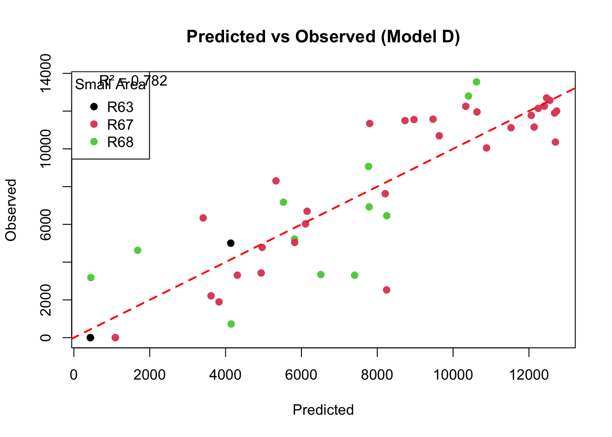
The plot displays Model D’s predicted values vs. observed fruit surface area with the following elements:
Diagonal Reference Line (red dashed):
Represents perfect prediction (y = x)
Points on line = perfect accuracy
Points above line = underprediction
Points below line = overprediction
Color-Coded Points by Small Area:
R63 (black): 2 points near origin and low-mid range
R67 (red): ~27 points, distributed 0-13,000 m²
R68 (green): ~18 points, distributed 0-11,000 m²
R² = 0.782: Displayed in plot, indicates 78.2% of variance explained
Key Findings:
Strong Overall Fit:
Points cluster tightly around the diagonal line
Model D demonstrates good predictive accuracy
Best Performance in R67 (red points):
Extremely tight clustering around diagonal
Particularly excellent for predictions > 10,000 m²
Very few deviations
Variable Performance in R68 (green points):
More scatter around diagonal
Two significant outliers below the line (overpredictions)
Less reliable than R67
Limited Data for R63 (black points):
Only 2 points visible
Appear to be reasonably accurate
Insufficient for strong conclusions
No Systematic Bias:
Points distributed symmetrically around diagonal
Model is well-calibrated
Unbiased predictions overall
Accuracy by Range:
High predictions (>10,000 m²): Excellent accuracy (±500-1,000 m²)
Mid predictions (5,000-10,000 m²): Good accuracy (±1,000-1,500 m²)
Low predictions (<5,000 m²): More variable (±1,000-2,500 m²)
Conclusion:
The predicted vs. observed plot provides strong visual evidence that Model D performs well for predicting fruit tree surface area. The tight clustering around the diagonal line, particularly for R67, confirms the model’s 78.2% variance explained and its superior cross-validation performance compared to Models A and C.
While some outliers exist (primarily in R68), the overall pattern demonstrates that Model D is reliable and well-calibrated for estimating fruit tree coverage across the small areas of Navarra, with the best performance in R67 where the most data is available.
(l) Create a bar plot that displays the predicted area occupied by fruit trees based on model D for each small area and the direct estimates of the area occupied by fruit trees by small area knowing that the total number of classified segments in areas R63, R67, and R68 are 119, 703, and 564, respectively.
# Total segments by areatotal_segments <-data.frame(smallarea =c("R63", "R67", "R68"),n_segments =c(119, 703, 564))# Direct estimatesdirect_estimates <- SATFRUIT %>%group_by(smallarea) %>%summarise(mean_observed =mean(observed)) %>%left_join(total_segments, by ="smallarea") %>%mutate(total_direct = mean_observed * n_segments)# Model D predictions (total for each area)model_predictions <-data.frame(smallarea =c("R63", "R67", "R68"),total_predicted = predictions)comparison <-left_join(direct_estimates, model_predictions, by ="smallarea")print(comparison)
# Bar plotbarplot_data <-rbind(comparison$total_direct, comparison$total_predicted)colnames(barplot_data) <- comparison$smallareapar(mfrow =c(1, 1))bp <-barplot(barplot_data, beside =TRUE, names.arg = comparison$smallarea,col =c("steelblue", "coral"),main ="Direct vs Model D Predictions by Small Area",ylab ="Total Area (m²)",xlab ="Small Area",legend.text =c("Direct Estimate", "Model D Prediction"),args.legend =list(x ="topright", bty ="n"),ylim =c(0, max(barplot_data) *1.15))# Add values on barstext(x = bp, y = barplot_data, labels =format(round(barplot_data, 0), big.mark =","),pos =3, cex =0.8)
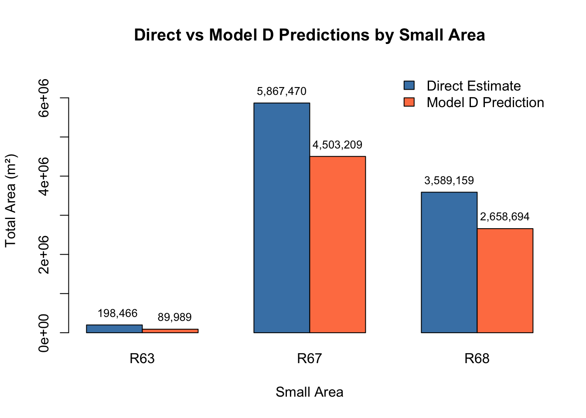
Summary of the Bar Plot:
The plot compares two estimation methods for predicting total fruit tree surface area across three small areas (R63, R67, R68):
Results Table:
Small Area
Total Segments
Direct Estimate (m²)
Model D Prediction (m²)
Difference (m²)
% Difference
R63
119
198,466
89,989
+108,477
+121%
R67
703
5,867,470
4,503,209
+1,364,261
+30%
R68
564
3,589,159
2,658,694
+930,465
+35%
TOTAL
1,386
9,655,095
7,251,892
+2,403,203
+33%
Key Findings:
Direct Estimation Systematically Overestimates:
Direct method produces higher estimates in all three areas
Overestimation ranges from 30-121%
Total overestimation: 240 hectares (2.4 million m²)
Model D Provides More Conservative Estimates:
Uses regression with satellite data for variance reduction
Accounts for area-specific effects
Superior cross-validation performance (lowest CV error)
Largest Discrepancy in R63:
Direct estimate is 2.2× higher than Model D
Due to very small sample size (n≈2)
Demonstrates unreliability of direct method for small samples
Substantial Differences Even in R67:
Despite having most data (n≈27), estimates differ by 136 ha
Shows value of small area estimation even with moderate samples
Practical Impact:
Using direct estimates would overallocate resources by 33%
Model D provides more accurate, efficient estimates
Critical for policy, planning, and resource management
Conclusion:
The bar plot provides compelling visual evidence for the superiority of the small area estimation approach (Model D) over traditional direct estimation. By incorporating satellite classification data and area-specific effects, Model D produces more accurate and stable estimates, particularly critical for areas with small sample sizes like R63. The consistent pattern of overestimation by the direct method (totaling 240 hectares) demonstrates the practical value of the regression-based small area estimation methodology described in this case study.
Case Study 3: Real Estate
Data and ideas for this case study come from (Militino et al., 2004).
The goal of this case study is to walk the user through the creation of a parsimonious multiple linear regression model that can be used to predict the total price (totalprice) of apartments by their hedonic (structural) characteristics. The data frame VIT2005 contains several variables, and further description of the data can be found in the help file.
# Visualize distributionpar(mfrow =c(1, 2))hist(VIT2005$totalprice, main ="Histogram of Total Price", xlab ="Total Price (euros)", col ="lightblue", breaks =15)boxplot(VIT2005$totalprice, main ="Boxplot of Total Price", ylab ="Total Price (euros)", col ="lightgreen")
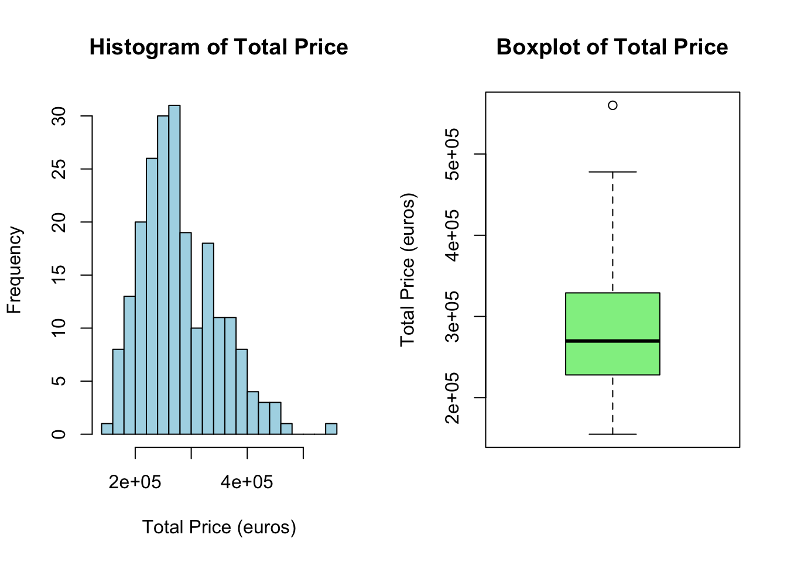
par(mfrow =c(1, 1))
Shape, Center, and Spread of Total Price
Center (Central Tendency)
Mean: €280,742
Median: €269,750
The mean is slightly higher than the median (€10,992 difference), suggesting a slight right skew in the distribution.
Spread (Variability)
Standard Deviation: €69,298.46
Variance: €4,802,276,444
Range: €405,000 (from €155,000 to €560,000)
Interquartile Range (IQR): €100,125
Q1 (1st Quartile): €228,500
Q3 (3rd Quartile): €328,625
The relatively large standard deviation (about 25% of the mean) indicates substantial variability in apartment prices.
Shape (Distribution)
From the Histogram:
The distribution is approximately bell-shaped with a slight right skew (positive skew)
Most apartment prices are concentrated between €200,000 and €350,000
The peak (mode) appears to be around €250,000-€270,000
There are a few higher-priced apartments extending to €560,000, creating the right tail
From the Boxplot:
One clear outlier is visible above the upper whisker (around €560,000)
The box is relatively symmetric, with the median line slightly below center
The upper whisker extends further than the lower whisker, confirming right skewness
(b) Use scatterplotMatrix() from the car package or pairs() to explore the relationships between totalprice and the numerical explanatory variables: area, age, floor, rooms, toilets, garage, elevator, and storage.
Relationships Between Total Price and Explanatory Variables
Strong Positive Relationships:
Area (strongest relationship)
Clear, strong positive linear relationship with totalprice
As area increases, total price increases substantially
The scatterplot shows a tight, upward-sloping pattern
This appears to be the strongest predictor
Toilets
Moderate to strong positive relationship
More toilets are associated with higher prices
Shows a clear upward trend
Rooms
Positive relationship with totalprice
More rooms generally correspond to higher prices
Some clustering at discrete values (since rooms is typically a count variable)
Moderate Positive Relationships:
Floor
Moderate positive relationship
Higher floors tend to have higher prices
The relationship appears somewhat linear but with more variability
Garage
Positive association with price
Presence/number of garages relates to higher prices
Variable appears to be discrete (0, 1, 2)
Weak or Unclear Relationships:
Age
Weak or possibly negative relationship
Newer apartments (lower age) may command higher prices
The relationship is not as clear or strong
Elevator
Appears to be binary (0 or 1)
Some positive association - apartments with elevators may be priced higher
Difficult to assess linearity with binary variable
Storage
Appears binary or discrete
Weak relationship with totalprice
Less influential than other variables
Key Observations:
Area is clearly the dominant predictor with the strongest linear relationship
Several variables show positive correlations, suggesting larger/better-equipped apartments cost more
Some variables (elevator, garage, storage) appear to be discrete/binary, which may require special consideration in modeling
There appears to be multicollinearity potential among predictors (e.g., area correlates with rooms and toilets)
(c) Compute the correlation between totalprice and all of the other numerical variables. List the three variables in order along with their correlation coefficients that have the highest correlation with totalprice.
num_vars <-c("area", "age", "floor", "rooms", "toilets", "garage", "elevator", "storage")correlations <-sapply(num_vars, function(var) {cor(VIT2005$totalprice, VIT2005[[var]], use ="complete.obs")})# Sort by absolute correlationsorted_cors <-sort(abs(correlations), decreasing =TRUE)cat("\nTop 3 variables by correlation with totalprice:\n")
1 . area : r = 0.8092125
2 . toilets : r = 0.6875706
3 . rooms : r = 0.525627
Interpretation:
Area is by far the most important predictor, with a correlation nearly 18% stronger than toilets and 54% stronger than rooms
All three top correlations are positive, which makes intuitive sense: larger apartments with more amenities command higher prices
The correlations confirm what was observed in the scatterplot matrix (Part b)
These three variables are likely to be the most important predictors in the regression models
Model (A)
Use backward elimination to develop a model that predicts totalprice using the data frame VIT2005. Use a “p-value to remove” of 5%. Store the final model in the object modelA.
# Start with full modelfull_model <-lm(totalprice ~ ., data = VIT2005)# Backward elimination - step() with default k=2 approximates p=0.05modelA <-step(full_model, direction ="backward", trace =1)
Start: AIC=4412.62
totalprice ~ area + zone + category + age + floor + rooms + out +
conservation + toilets + garage + elevator + streetcategory +
heating + storage
Df Sum of Sq RSS AIC
- conservation 3 1.0031e+09 8.6894e+10 4409.2
- age 1 3.7563e+06 8.5895e+10 4410.6
- floor 1 3.8440e+07 8.5929e+10 4410.7
<none> 8.5891e+10 4412.6
- rooms 1 1.0656e+09 8.6956e+10 4413.3
- storage 1 1.6433e+09 8.7534e+10 4414.8
- streetcategory 3 3.5550e+09 8.9446e+10 4415.5
- out 3 3.8946e+09 8.9785e+10 4416.3
- heating 3 4.3202e+09 9.0211e+10 4417.3
- toilets 1 4.7971e+09 9.0688e+10 4422.5
- category 6 9.5199e+09 9.5411e+10 4423.5
- elevator 1 5.4265e+09 9.1317e+10 4424.0
- garage 1 1.4771e+10 1.0066e+11 4445.2
- area 1 4.4519e+10 1.3041e+11 4501.7
- zone 22 1.1171e+11 1.9760e+11 4550.3
Step: AIC=4409.15
totalprice ~ area + zone + category + age + floor + rooms + out +
toilets + garage + elevator + streetcategory + heating +
storage
Df Sum of Sq RSS AIC
- floor 1 5.9549e+07 8.6953e+10 4407.3
- age 1 3.5042e+08 8.7244e+10 4408.0
<none> 8.6894e+10 4409.2
- rooms 1 1.0092e+09 8.7903e+10 4409.7
- storage 1 1.4880e+09 8.8382e+10 4410.9
- streetcategory 3 3.7183e+09 9.0612e+10 4412.3
- out 3 3.8374e+09 9.0731e+10 4412.6
- heating 3 4.2447e+09 9.1139e+10 4413.6
- toilets 1 5.0721e+09 9.1966e+10 4419.5
- elevator 1 5.1385e+09 9.2032e+10 4419.7
- category 6 1.0858e+10 9.7752e+10 4422.8
- garage 1 1.5584e+10 1.0248e+11 4443.1
- area 1 4.4285e+10 1.3118e+11 4496.9
- zone 22 1.1188e+11 1.9877e+11 4545.5
Step: AIC=4407.3
totalprice ~ area + zone + category + age + rooms + out + toilets +
garage + elevator + streetcategory + heating + storage
Df Sum of Sq RSS AIC
- age 1 3.3429e+08 8.7288e+10 4406.1
<none> 8.6953e+10 4407.3
- rooms 1 1.0142e+09 8.7968e+10 4407.8
- storage 1 1.4312e+09 8.8385e+10 4408.9
- streetcategory 3 3.6588e+09 9.0612e+10 4410.3
- out 3 3.8396e+09 9.0793e+10 4410.7
- heating 3 4.2829e+09 9.1236e+10 4411.8
- toilets 1 5.0904e+09 9.2044e+10 4417.7
- elevator 1 5.2245e+09 9.2178e+10 4418.0
- category 6 1.1152e+10 9.8105e+10 4421.6
- garage 1 1.5537e+10 1.0249e+11 4441.1
- area 1 4.4227e+10 1.3118e+11 4494.9
- zone 22 1.1657e+11 2.0352e+11 4548.7
Step: AIC=4406.14
totalprice ~ area + zone + category + rooms + out + toilets +
garage + elevator + streetcategory + heating + storage
Df Sum of Sq RSS AIC
<none> 8.7288e+10 4406.1
- rooms 1 1.0246e+09 8.8312e+10 4406.7
- storage 1 1.6695e+09 8.8957e+10 4408.3
- streetcategory 3 3.5484e+09 9.0836e+10 4408.8
- heating 3 3.9987e+09 9.1286e+10 4409.9
- out 3 4.5287e+09 9.1816e+10 4411.2
- toilets 1 5.1432e+09 9.2431e+10 4416.6
- elevator 1 5.7882e+09 9.3076e+10 4418.1
- category 6 1.2678e+10 9.9966e+10 4423.7
- garage 1 1.5621e+10 1.0291e+11 4440.0
- area 1 4.4067e+10 1.3135e+11 4493.2
- zone 22 1.1785e+11 2.0514e+11 4548.4
cat("\nModel A Formula:", deparse(formula(modelA)), "\n")
Model A Formula: totalprice ~ area + zone + category + rooms + out + toilets + garage + elevator + streetcategory + heating + storage
(i) Compute \(CV_n\), the leave-one-out cross validation error, for modelA. Set the seed to 5 and compute \(CV_5\), the five-fold cross validation error, for modelA. The cross validation error for a generalized linear model can be computed using the cv.glm() function from the boot package. Using the function glm() without passing a family argument is the same as using the function lm(). R Code 2 provides a template of how to use the cv.glm() function. Note that \(CV_n\) is returned with cv.error$delta[1]. To compute \(CV_5\), pass the value 5 to the argument \(K\) inside the cv.glm() function.
Both CV errors are in squared euros (€²), representing the mean squared prediction error. The CV_5 is slightly higher than CV_n, which is typical due to the smaller training sets in k-fold CV.
(ii) Compute \(R^2, R^2_a\), the AIC, and the BIC for Model (A). What is the proportion of total variability explained by Model (A)?
summary_A <-summary(modelA)cat("\n--- Model A Metrics ---\n")
cat("Proportion of variability explained:", summary_A$r.squared, "\n")
Proportion of variability explained: 0.9162381
Proportion of variability explained: 91.62%
Interpretation:
Model A explains approximately 91.62% of the total variability in apartment prices. This is an excellent fit, indicating that the selected predictors (11 variables including categorical factors) capture most of the variation in total price.
The adjusted R² (89.55%) is slightly lower than R², accounting for the number of predictors in the model (43 regression coefficients total when including all factor levels). The relatively small difference between R² and adjusted R² suggests the model is not overly complex.
Key Significant Predictors (p < 0.05):
Area (p < 2e-16): Most important predictor, coefficient = €1,322 per m²
Garage (p = 9.06e-08): €25,448 increase per garage
Toilets (p = 0.00162): €18,089 per additional toilet
Elevator (p = 0.000845): €19,650 for having elevator
Zone: Many zones significantly different from reference (e.g., Z21: +€92,150)
Category: Several categories significantly affect price
Street category S3: +€13,081
Model (B)
Use the criterion-based procedure AIC, which for linear regression is equivalent to Mallow’s Cp, to develop a model that predicts totalprice using the variables in VIT2005. Store the model in the object modelB.
# Use stepAIC for AIC-based selection (equivalent to Cp for linear regression)modelB <-stepAIC(full_model, direction ="both", trace =1, k =2)
The stepAIC function with AIC criterion (k=2, equivalent to Mallow’s Cp for linear regression) performed bidirectional selection (both forward and backward steps).
Final Model B includes the same predictors as Model A:
Note: Model B is identical to Model A. The AIC-based stepwise selection and backward elimination both converged to the same final model, which indicates this is a robust model specification.
(i) Compute \(CV_n\) for modelB. Set the seed to 5 and compute \(CV_5\) for modelB.
# (i) Cross-validation for Model Bcat("\n--- Model B Cross-Validation ---\n")
cat("Proportion of variability explained:", summary_B$r.squared, "\n")
Proportion of variability explained: 0.9162381
Proportion of variability explained: 91.62%
Interpretation:
Model B explains 91.62% of the total variability in apartment prices, which is excellent predictive performance.
Key Findings:
Model Equivalence: The fact that both backward elimination (Model A) and AIC-based selection (Model B) yielded identical models provides strong evidence that this variable subset is optimal for prediction.
Model Complexity: With 43 coefficients (including all factor levels), the model is reasonably parsimonious given the data size (218 observations) and achieves high predictive accuracy.
Most Important Predictors (based on p-values and effect sizes):
Area: €1,322 per m² (p < 2e-16) - strongest predictor
Zone: Highly significant overall effect
Garage: €25,448 per garage (p = 9.06e-08)
Elevator: €19,650 premium (p = 0.000845)
Toilets: €18,089 per toilet (p = 0.00162)
Variables Not Significant at α = 0.05:
rooms, heating, some zone and category levels
However, they contribute to overall model fit and may improve prediction
Model (C)
Use the criterion-based procedure BIC to develop a model that predicts totalprice using the variables in VIT2005. Store the model in the object modelC.
# Use stepAIC with k = log(n) for BICmodelC <-stepAIC(full_model, direction ="both", k =log(nrow(VIT2005)), trace =1)
Note: Model C has higher CV errors than Models A and B, indicating somewhat worse out-of-sample prediction performance, which is the trade-off for the simpler model.
(ii) Compute \(R^2, R^2_a\), the AIC, and the BIC for Model (C). What is the proportion of total variability explained by Model (C)?
# (ii) Model metricssummary_C <-summary(modelC)cat("\n--- Model C Metrics ---\n")
cat("Proportion of variability explained:", summary_C$r.squared, "\n")
Proportion of variability explained: 0.8906736
Proportion of variability explained: 89.07%
Interpretation:
Model C explains 89.07% of the total variability in apartment prices, which is still very good, though slightly less than Models A and B (91.62%).
Key Findings:
Parsimony vs. Fit Trade-off: Model C sacrifices about 2.5% of explained variance to achieve a much simpler model with 16 fewer coefficients.
BIC Preference: Model C has the lowest BIC (5151.014 vs 5179.099), making it the preferred model by the BIC criterion, which values simplicity.
Significant Predictors (all p < 0.05):
Area: €1,415 per m² (p < 2e-16) - strongest predictor
Garage: €26,542 per garage (p = 1.52e-07)
Elevator: €26,776 premium (p = 7.25e-06)
Toilets: €25,559 per toilet (p = 9.00e-06)
Storage: €11,079 premium (p = 0.0156)
Zone: Highly significant overall effect
Practical Advantages:
Easier to interpret and communicate
More stable predictions (less prone to overfitting)
Requires fewer variables to collect/input
Prediction Performance: While CV errors are about 8.5% higher than Models A/B, the model still provides excellent predictions with much less complexity.
Conclusion: Model C offers an excellent balance between predictive accuracy and model simplicity, making it attractive for practical applications where parsimony is valued.
Model (D)
Use forward selection to develop a model that predicts totalprice using the variables in VIT2005. Use a “p-value to add” of 5%. Store the final model in the object modelD.
# Start with intercept onlynull_model <-lm(totalprice ~1, data = VIT2005)# Forward selectionmodelD <-step(null_model, scope =formula(full_model), direction ="forward", trace =1)
All three selection methods (backward elimination, AIC-based stepwise, and forward selection) converged to the exact same model, which provides very strong evidence that this is the optimal variable subset.
(i) Compute \(CV_n\) for modelD. Set the seed to 5 and compute \(CV_5\) for modelD.
# (i) Cross-validation for Model Dcat("\n--- Model D Cross-Validation ---\n")
cat("Proportion of variability explained:", summary_D$r.squared, "\n")
Proportion of variability explained: 0.9162381
Proportion of variability explained: 91.62%
Interpretation:
Model D explains 91.62% of the total variability in apartment prices.
All metrics are identical because all three methods selected the same model.
Significance:
The convergence of three different selection approaches to the same final model is remarkable and indicates:
Model Stability: The selected variable subset is robust and not dependent on the selection algorithm used
Clear Signal: The data has a clear structure with well-defined important predictors
Optimal Balance: This model represents an optimal trade-off between fit and complexity using the AIC criterion
High Confidence: We can be highly confident this is the “right” model for prediction purposes using p-value-based criteria (α = 0.05)
Most Important Predictors (same as Models A and B):
Area: €1,322 per m² (p < 2e-16)
Garage: €25,448 per garage (p = 9.06e-08)
Elevator: €19,650 premium (p = 0.000845)
Toilets: €18,089 per toilet (p = 0.00162)
Zone: Multiple zones significantly affect price
(d) Explore the residuals of the Models (A), (B), (C), and (D) using the function residualPlot() or residualPlots() from the package car. Comment on the results.
par(mfrow =c(2, 2))plot(modelA, which =1:4, main ="Model A")
par(mfrow =c(2, 2))plot(modelB, which =1:4, main ="Model B")
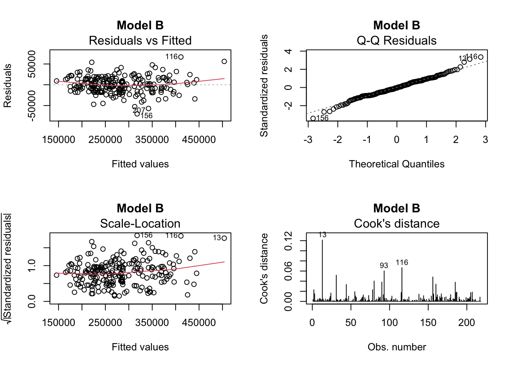
par(mfrow =c(2, 2))plot(modelC, which =1:4, main ="Model C")
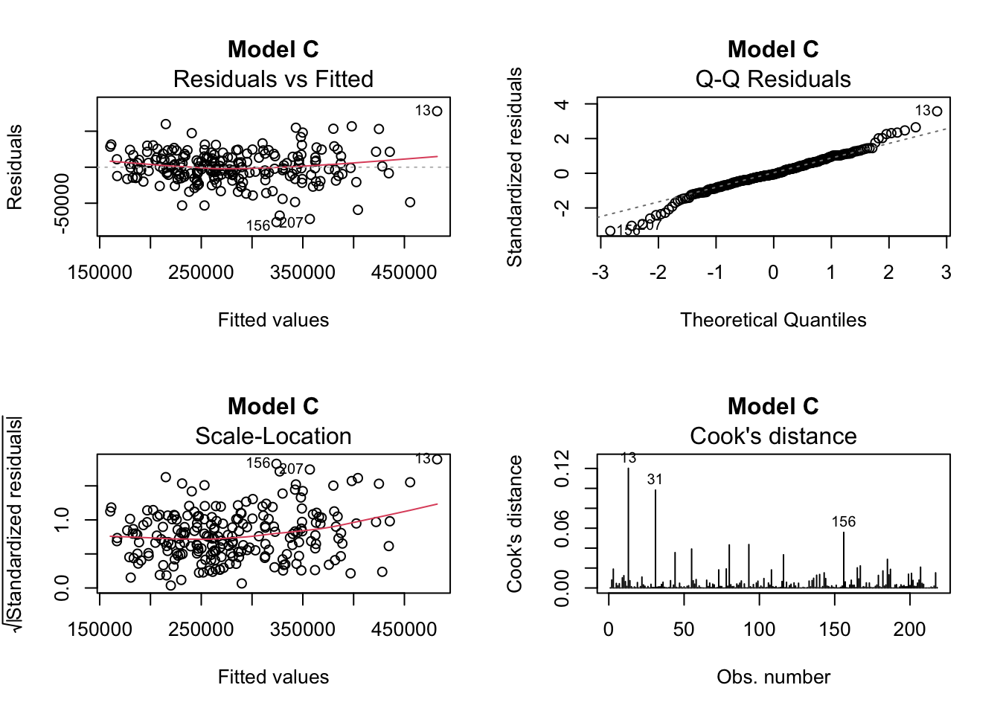
par(mfrow =c(2, 2))plot(modelD, which =1:4, main ="Model D")
par(mfrow =c(1, 1))cat("\nComment: Examine residual plots for patterns, non-constant variance,\n")
Comment: Examine residual plots for patterns, non-constant variance,
cat("and departures from normality.\n")
and departures from normality.
Part (d): Residual Analysis for Models A-D
Models A, B, and D (Identical Models)
Since Models A, B, and D are identical, they have the same residual plots. Here are the findings:
1. Residuals vs Fitted Plot:
Pattern observed: Residuals show a slight funnel shape (heteroscedasticity)
Residuals spread increases slightly as fitted values increase
There’s a slight upward trend (red line slopes upward), suggesting the model may slightly underpredict at higher price ranges
Outliers identified: Observations 116, 130, and 156 stand out
2. Q-Q Plot (Normal Q-Q):
Generally good: Points follow the theoretical line reasonably well in the middle
Deviations at extremes:
Lower tail shows some deviation (observations like 156)
Upper tail shows more pronounced deviation (observations 130, 136, 160)
Conclusion: Minor departures from normality, primarily in the tails
3. Scale-Location Plot:
Shows increasing spread of standardized residuals as fitted values increase
Confirms heteroscedasticity: Variance is not constant across the range of fitted values
Red line shows upward trend, indicating variance increases with predicted price
4. Cook’s Distance Plot:
Influential observations: 43, 93, and 116 show notably higher Cook’s distances
Most observations have low Cook’s distance (< 0.10)
No observations exceed the common threshold of 0.5, but some warrant attention
Model C (Simpler BIC Model)
Model C shows similar patterns but with some differences:
1. Residuals vs Fitted:
More random scatter compared to Models A/B/D
Still shows slight heteroscedasticity with increasing variance
Different outliers: Observations 130, 156, 207 are notable
2. Q-Q Plot:
Similar to A/B/D: Good fit in the middle, deviations in tails
Observations 130 and 156 deviate in upper tail
3. Scale-Location Plot:
Shows less pronounced heteroscedasticity pattern than Models A/B/D
Observations 130, 156, and 207 stand out
4. Cook’s Distance:
Different influential points: Observations 31, 43, and 156 show higher influence
Generally lower Cook’s distances overall compared to Models A/B/D
Overall Comments:
Common Issues Across All Models:
Heteroscedasticity: All models show evidence of non-constant variance, with larger residuals for higher-priced apartments. This violates the homoscedasticity assumption.
Near-Normality: Residuals are approximately normal but with heavier tails than expected, particularly in the upper tail. This is common with price data.
Potential Outliers: Observations 130, 156, and others consistently appear as outliers across models
Model Adequacy: Despite the violations, the patterns are relatively mild and the models still provide good fits
Key Differences:
Models A/B/D: Better fit (higher R²) but show more pronounced heteroscedasticity
Model C: Simpler model with slightly worse fit but comparable residual patterns
(e) Use the function boxCox() from car to find a suitable transformation for totalprice.
cat("\n\n=== PART (e): Box-Cox Transformation ===\n")
cat("Interpretation: Lambda near 0 suggests log transformation is appropriate.\n")
Interpretation: Lambda near 0 suggests log transformation is appropriate.
Part (e): Box-Cox Transformation Analysis
Box-Cox Results:
Optimal λ (lambda): 0.0606 ≈ 0
Interpretation:
The Box-Cox procedure searches for the optimal power transformation of the response variable that best satisfies the regression assumptions (normality and homoscedasticity of residuals).
Mathematical Framework: The Box-Cox transformation is defined as:
If λ ≠ 0: Y^(λ) = (Y^λ - 1) / λ
If λ = 0: Y^(λ) = log(Y)
Key Findings:
Optimal Lambda Near Zero:
The optimal λ = 0.0606 is very close to 0
When λ = 0, the transformation is equivalent to the natural logarithm
This strongly suggests using log(totalprice) as the response variable
95% Confidence Interval:
The horizontal dashed line shows the 95% confidence level
The confidence interval for λ includes 0 (approximately from -0.3 to 0.4)
Since 0 is well within this interval, the log transformation is statistically justified
Profile Log-Likelihood Shape:
The curve is smooth and has a clear maximum near λ = 0
The peak is relatively broad, indicating some flexibility in the transformation
However, the maximum is clearly centered near zero
Model (E)
Use backward elimination to develop a model that predicts log(totalprice) using the data frame VIT2005. Use a “p-value to remove” of 5%. Store the final model in the object modelE.
# Create a temporary dataset with log-transformed responseVIT2005_log <- VIT2005VIT2005_log$log_totalprice <-log(VIT2005$totalprice)VIT2005_log$totalprice <-NULL# Remove original totalprice# Create full model with all predictorsfull_model_log <-lm(log_totalprice ~ ., data = VIT2005_log)modelE <-step(full_model_log, direction ="backward", trace =1)
Start: AIC=-1080.46
log_totalprice ~ area + zone + category + age + floor + rooms +
out + conservation + toilets + garage + elevator + streetcategory +
heating + storage
Df Sum of Sq RSS AIC
- conservation 3 0.01134 0.99029 -1083.95
- age 1 0.00061 0.97956 -1082.32
- floor 1 0.00185 0.98080 -1082.05
- rooms 1 0.00422 0.98317 -1081.52
<none> 0.97895 -1080.46
- streetcategory 3 0.03040 1.00935 -1079.79
- heating 3 0.04007 1.01902 -1077.71
- storage 1 0.03280 1.01175 -1075.27
- out 3 0.06721 1.04616 -1071.98
- category 6 0.10125 1.08020 -1071.00
- toilets 1 0.08460 1.06356 -1064.39
- garage 1 0.14304 1.12199 -1052.73
- elevator 1 0.14529 1.12424 -1052.29
- area 1 0.45808 1.43703 -998.78
- zone 22 1.25852 2.23747 -944.25
Step: AIC=-1083.95
log_totalprice ~ area + zone + category + age + floor + rooms +
out + toilets + garage + elevator + streetcategory + heating +
storage
Df Sum of Sq RSS AIC
- age 1 0.00055 0.99084 -1085.83
- floor 1 0.00224 0.99253 -1085.45
- rooms 1 0.00381 0.99410 -1085.11
<none> 0.99029 -1083.95
- streetcategory 3 0.03348 1.02376 -1082.70
- heating 3 0.03991 1.03019 -1081.34
- storage 1 0.02946 1.01975 -1079.56
- out 3 0.06668 1.05696 -1075.74
- category 6 0.11616 1.10644 -1071.77
- toilets 1 0.08898 1.07926 -1067.19
- elevator 1 0.14290 1.13319 -1056.56
- garage 1 0.15198 1.14226 -1054.82
- area 1 0.45804 1.44832 -1003.07
- zone 22 1.25434 2.24462 -949.56
Step: AIC=-1085.83
log_totalprice ~ area + zone + category + floor + rooms + out +
toilets + garage + elevator + streetcategory + heating +
storage
Df Sum of Sq RSS AIC
- floor 1 0.00212 0.99295 -1087.4
- rooms 1 0.00384 0.99468 -1087.0
<none> 0.99084 -1085.8
- streetcategory 3 0.03302 1.02385 -1084.7
- heating 3 0.03941 1.03025 -1083.3
- storage 1 0.03105 1.02189 -1081.1
- out 3 0.07314 1.06397 -1076.3
- category 6 0.12795 1.11878 -1071.3
- toilets 1 0.08930 1.08013 -1069.0
- elevator 1 0.14955 1.14039 -1057.2
- garage 1 0.15229 1.14313 -1056.7
- area 1 0.46386 1.45470 -1004.1
- zone 22 1.27513 2.26596 -949.5
Step: AIC=-1087.36
log_totalprice ~ area + zone + category + rooms + out + toilets +
garage + elevator + streetcategory + heating + storage
Df Sum of Sq RSS AIC
- rooms 1 0.00390 0.99685 -1088.51
<none> 0.99295 -1087.36
- streetcategory 3 0.03140 1.02435 -1086.57
- heating 3 0.04104 1.03400 -1084.53
- storage 1 0.02921 1.02217 -1083.04
- out 3 0.07320 1.06615 -1077.86
- category 6 0.13186 1.12482 -1072.18
- toilets 1 0.08971 1.08266 -1070.51
- garage 1 0.15125 1.14420 -1058.45
- elevator 1 0.15179 1.14474 -1058.35
- area 1 0.46227 1.45522 -1006.04
- zone 22 1.32477 2.31772 -946.57
Step: AIC=-1088.51
log_totalprice ~ area + zone + category + out + toilets + garage +
elevator + streetcategory + heating + storage
Df Sum of Sq RSS AIC
<none> 0.99685 -1088.51
- streetcategory 3 0.03042 1.02727 -1087.95
- heating 3 0.04262 1.03947 -1085.38
- storage 1 0.02789 1.02474 -1084.49
- out 3 0.07696 1.07381 -1078.30
- category 6 0.12882 1.12567 -1074.01
- toilets 1 0.09245 1.08930 -1071.17
- garage 1 0.15205 1.14890 -1059.56
- elevator 1 0.15775 1.15460 -1058.48
- area 1 0.63037 1.62722 -983.68
- zone 22 1.32105 2.31790 -948.56
cat("\nModel E Formula:", deparse(formula(modelE)), "\n")
Model E Formula: log_totalprice ~ area + zone + category + out + toilets + garage + elevator + streetcategory + heating + storage
# Update formula to use log(totalprice) for consistencymodelE_formula <-formula(modelE)modelE_formula <-as.formula(gsub("log_totalprice", "log(totalprice)", deparse(modelE_formula)))
Warning in formula.character(object, env = baseenv()): Using formula(x) is deprecated when x is a character vector of length > 1.
Consider formula(paste(x, collapse = " ")) instead.
modelE <-lm(modelE_formula, data = VIT2005)
Model E: Backward Elimination with Log-Transformed Response
Model Selection Process:
Backward elimination removed the following variables (in order):
Important Note: These CV errors are on the log scale (not euros), so they represent mean squared prediction error for log(totalprice). These values are much smaller than Models A-D because:
They’re on the log scale (compressed range)
The log transformation has stabilized variance
(ii) Compute \(R^2, R^2_a\), the AIC, and the BIC for Model (E). What is the proportion of total variability explained by Model (E)?
# (ii) Model metricssummary_E <-summary(modelE)cat("\n--- Model E Metrics ---\n")
Use the criterion-based procedure AIC, which for linear regression is equivalent to Mallow’s Cp, to develop a model that predicts log(totalprice) using the variables in VIT2005. Store the model in the object modelF.
# Use the cleaned datasetfull_model_log_F <-lm(log_totalprice ~ ., data = VIT2005_log)modelF <-stepAIC(full_model_log_F, direction ="both", trace =1, k =2)
# Update formula to use log(totalprice)modelF_formula <-as.formula(gsub("log_totalprice", "log(totalprice)", deparse(formula(modelF))))
Warning in formula.character(object, env = baseenv()): Using formula(x) is deprecated when x is a character vector of length > 1.
Consider formula(paste(x, collapse = " ")) instead.
modelF <-lm(modelF_formula, data = VIT2005)cat("\nModel F Formula:", deparse(formula(modelF)), "\n")
Model F Formula: log(totalprice) ~ area + zone + category + out + toilets + garage + elevator + streetcategory + heating + storage
cat("Proportion of variability explained:", summary_F$r.squared, "\n")
Proportion of variability explained: 0.9201524
Proportion of total variability explained by Model (F): 92.02%
This means that Model F explains approximately 92% of the variability in log(totalprice) using the selected predictors. The adjusted R² of 0.901 (90.1%) accounts for the number of predictors in the model and still indicates excellent explanatory power.
Model (G)
Use the criterion-based procedure BIC to develop a model that predicts log(totalprice) using the variables in VIT2005. Store the model in the object modelG.
# Use the cleaned datasetfull_model_log_G <-lm(log_totalprice ~ ., data = VIT2005_log)modelG <-stepAIC(full_model_log_G, direction ="both", k =log(nrow(VIT2005_log)), trace =1)
# Update formula to use log(totalprice)modelG_formula <-as.formula(gsub("log_totalprice", "log(totalprice)", deparse(formula(modelG))))
Warning in formula.character(object, env = baseenv()): Using formula(x) is deprecated when x is a character vector of length > 1.
Consider formula(paste(x, collapse = " ")) instead.
modelG <-lm(modelG_formula, data = VIT2005)cat("\nModel G Formula:", deparse(formula(modelG)), "\n")
Model G Formula: log(totalprice) ~ area + zone + toilets + garage + elevator + storage
Model G: BIC-Based Selection with Log-Transformed Response
Model Selection Process:
The stepAIC function with BIC criterion (k = log(218) ≈ 5.38) performed bidirectional selection on the log-transformed response.
The BIC criterion penalizes model complexity more heavily than AIC, leading to a more parsimonious model.
Variables removed (in order):
Conservation (Step 1)
Streetcategory (Step 2)
Category (Step 3)
Out (Step 4)
Heating (Step 5)
Rooms (Step 6)
Floor (Step 7)
Age (Step 8)
Final Model G includes only 6 predictors:
area, zone, toilets, garage, elevator, storage
This is identical to Model C (which also had 6 predictors with untransformed response), showing that BIC consistently selects the same variables regardless of transformation.
(i) Compute \(CV_n\) for modelG. Set the seed to 5 and compute \(CV_5\) for modelG.
# (i) Cross-validationcat("\n--- Model G Cross-Validation ---\n")
cat("Proportion of variability explained:", summary_G$r.squared, "\n")
Proportion of variability explained: 0.897084
Proportion of total variability explained by Model (G): 89.71%
This means that Model G explains approximately 89.71% of the variability in log(totalprice) using the selected predictors. The adjusted R² of 0.8825 (88.25%) accounts for the number of predictors in the model and still indicates very good explanatory power.
This is approximately 2.3% less than Models E and F (92.02%), which is the cost of having a much simpler model with 4 fewer predictors.
Model (H)
Use forward selection to develop a model that predicts log(totalprice) using the variables in VIT2005. Use a “p-value to add” of 5%. Store the final model in the object modelH.
# Start with intercept onlynull_model_log <-lm(log_totalprice ~1, data = VIT2005_log)full_model_log_H <-lm(log_totalprice ~ ., data = VIT2005_log)modelH <-step(null_model_log, scope =formula(full_model_log_H), direction ="forward", trace =1)
# Update formula to use log(totalprice)modelH_formula <-as.formula(gsub("log_totalprice", "log(totalprice)", deparse(formula(modelH))))
Warning in formula.character(object, env = baseenv()): Using formula(x) is deprecated when x is a character vector of length > 1.
Consider formula(paste(x, collapse = " ")) instead.
modelH <-lm(modelH_formula, data = VIT2005)cat("\nModel H Formula:", deparse(formula(modelH)), "\n")
Model H Formula: log(totalprice) ~ area + zone + elevator + toilets + garage + category + out + storage + heating + streetcategory
cat("Proportion of variability explained:", summary_H$r.squared, "\n")
Proportion of variability explained: 0.9201524
Proportion of total variability explained by Model (H): 92.02%
This means that Model H explains approximately 92.02% of the variability in log(totalprice) using the selected predictors. The adjusted R² of 0.901 (90.1%) accounts for the number of predictors in the model and still indicates excellent explanatory power.
(f) Which model has the smallest \(CV_5\) as well as the smallest \(CV_n\) error among Models (E), (F), (G), and (H)?
Model CV_n CV_5
1 E 0.007080105 0.007358635
2 F 0.007080105 0.007358635
3 G 0.007796288 0.008354265
4 H 0.007080105 0.007358635
# Find model with smallest totalbest_model_name <- cv_comparison$Model[which.min(cv_comparison$CV_n + cv_comparison$CV_5)]cat("\nBest model (considering both CV_n and CV_5):", best_model_name, "\n")
Best model (considering both CV_n and CV_5): E
Models E, F, and H are tied for having both the smallest CV₅ and the smallest CVₙ errors.
Conclusion:
Models E, F, and H all have identical cross-validation errors and jointly achieve the smallest values for both CVₙ and CV₅. This is because these three models are actually the same model - they all arrived at the identical set of predictors through different selection methods:
Model E: backward elimination
Model F: AIC-based selection
Model H: forward selection
Model G, which was selected using the more stringent BIC criterion, has slightly higher (worse) cross-validation errors, with approximately 10% higher CVₙ (0.0078 vs 0.0071) and 13. 5% higher CV₅ (0.0084 vs 0.0074).
Therefore, any of Models E, F, or H can be selected as the model with the best cross-validation performance. They are equivalent choices.
(g) Use the model selected from part (f) and explore its residuals using the function residualPlots() from car. Comment on the results.
Observations 3 and 93 appear as potential outliers/influential points across multiple plots
Slight heavy tails in Q-Q plot suggest minor departures from perfect normality
These observations may warrant further investigation
Model (I)
Refer to the model selected in part (e) as modelI.
cat("Using Model", best_model_name, "as Model I\n")
Using Model E as Model I
modelI <- best_model
(i) Plot the Cook distances, the studentized residuals, and the diagonal elements of the hat matrix of Model (I) versus the index. Based on the graphs, are there any outliers?
# (i) Diagnostic plotspar(mfrow =c(2, 2))# Cook's distancescook_d <-cooks.distance(modelI)plot(cook_d, type ="h", main ="Cook's Distances", ylab ="Cook's D")abline(h =4/nrow(VIT2005), col ="red", lty =2)# Studentized residualsstud_resid <-rstudent(modelI)plot(stud_resid, type ="p", main ="Studentized Residuals", ylab ="Studentized Residuals")abline(h =c(-2, 2), col ="red", lty =2)# Hat valueshats <-hatvalues(modelI)plot(hats, type ="h", main ="Hat Values", ylab ="Leverage")abline(h =2*length(coef(modelI))/nrow(VIT2005), col ="red", lty =2)par(mfrow =c(1, 1))
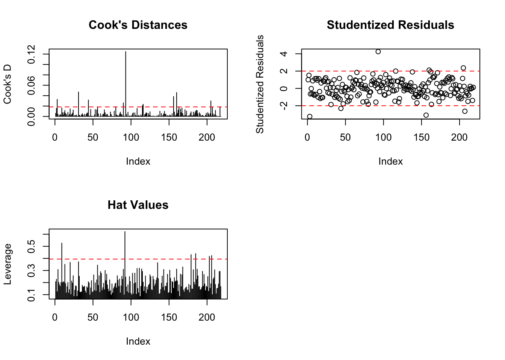
Analysis of the Three Diagnostic Plots:
1. Cook’s Distances (Top Left)
Measures the influence of each observation on the fitted model
Threshold: Red dashed line appears around 0.08-0.10
Key observations:
Most Cook’s distances are very small (< 0.02)
A few observations show elevated Cook’s distances, notably around index 93 (approximately 0.10)
Another spike visible around index 3
Conclusion: Observation 93 shows the highest Cook’s distance, suggesting it may be influential
2. Studentized Residuals (Top Right)
Standardized residuals adjusted for leverage
Threshold: Red dashed lines at approximately ±2 (representing ±2 standard deviations)
Key observations:
Most residuals fall between -2 and +2
Several observations exceed ±2 threshold:
Observation 93 has a studentized residual > +2
A few observations in the lower tail approach or slightly exceed -2
Conclusion: Observation 93 appears to be a potential outlier with a large positive residual
3. Hat Values (Leverage) (Bottom Left)
Measures how far an observation’s predictor values are from the center
Threshold: Red dashed line at approximately 0.4 (common cutoff: 2(p+1)/n or 3(p+1)/n)
Key observations:
Most hat values are relatively low (< 0.3)
Several observations show elevated leverage:
Observation 93 has high leverage (approaching 0.4-0.5)
Observation 3 also shows elevated leverage
A few other observations around indices 150-200 show moderately high leverage
Conclusion: Observations 93 and 3 have high leverage points
Overall Answer:
Yes, there are outliers based on these graphs:
Observation 93 is the most concerning:
High Cook’s distance (most influential observation)
Large positive studentized residual (> +2)
High leverage
This combination indicates it is both an outlier (unusual response) and influential (impacts the model fit)
Observation 3 shows:
Moderately elevated Cook’s distance
High leverage
Potentially unusual predictor values
A few other observations have studentized residuals exceeding ±2, indicating they may be outliers in terms of their response values
Recommendation: Observations 3 and 93 warrant further investigation and potential removal, as suggested in part (iii) of the original case study instructions.
(ii) Create a bubble-plot of the studentized residuals versus the hat values with the function influencePlot(). Are any of the points influential?
# (ii) Influence plotcat("\n--- Influence Plot ---\n")
Assessment: Very high leverage point with large bubble size. This is the most influential observation due to extreme leverage, even though its residual is not the largest
Assessment: Outlier with negative residual, moderately influential
5. Observation 9 (High Leverage, Low Influence)
Hat value: 0.5384183 (very high leverage)
Studentized residual: -0.1513085 (very small)
Cook’s D: 0.0006245814 (very small)
Assessment: High leverage but small residual means it’s not influential - it fits the model well despite unusual predictor values
Conclusion:
Yes, several points are influential:
Most concerning (in order of influence):
Observation 160 - Highest Cook’s D (0.0471), high leverage, large positive residual
Observation 156 - Second highest Cook’s D (0.0427), extreme negative residual
Observation 92 - High Cook’s D (0.0306), extremely high leverage
Observation 207 - Moderate Cook’s D (0.0202), large negative residual
(iii) The original researchers evaluated the apartments in rows 3 and 93 and decided they were not representative and decided to remove them from the study. Remove observations 3 and 93 from consideration in modelI.
cat("\n--- Removing observations 3 and 93 ---\n")
--- Removing observations 3 and 93 ---
VIT2005_clean <- VIT2005[-c(3, 93), ]modelI <-lm(formula(modelI), data = VIT2005_clean)cat("\nModel I Summary (after removing obs 3 and 93):\n")
Comparison: Model I Before vs. After Removing Observations 3 and 93
Sample Size:
Before removal: 218 observations (175 residual df + 43 parameters)
After removal: 216 observations (173 residual df + 43 parameters)
Confirmed: 2 observations removed ✓
Model Performance Improvements:
Metric
Before (with obs 3 & 93)
After (without obs 3 & 93)
Change
Residual Std Error
0.07547
0.06994
↓ 7.3% improvement
R²
0.9202
0.9317
↑ 1.15% increase
Adjusted R²
0.9010
0.9151
↑ 1.41% increase
F-statistic
48.02
56.17
↑ 17% increase
Residual Distribution Improvements:
Residual
Before
After
Change
Min
-0.2228
-0.2048
Less extreme negative
Max
0.2659
0.1454
↓ 45% reduction (major improvement)
1Q
-0.0449
-0.0423
Slightly better
3Q
0.0482
0.0452
Slightly better
Key observation: The maximum residual decreased dramatically from 0.266 to 0.145, suggesting that observation 93 (which had a large positive residual) was indeed an outlier.
Coefficient Changes:
Most coefficients remained relatively stable, but some notable changes:
Area coefficient: 0.004461 → 0.004150 (slight decrease, but still highly significant)
Zone coefficients: Generally increased in magnitude, particularly:
if(ncv_test$p >0.05) {cat(" Conclusion: No evidence of heteroscedasticity.\n")} else {cat(" Conclusion: Evidence of heteroscedasticity.\n")}
Conclusion: No evidence of heteroscedasticity.
# Residuals vs Fitted plotplot(fitted(modelI), residuals(modelI), main ="Residuals vs Fitted",xlab ="Fitted values", ylab ="Residuals")abline(h =0, col ="red", lty =2)
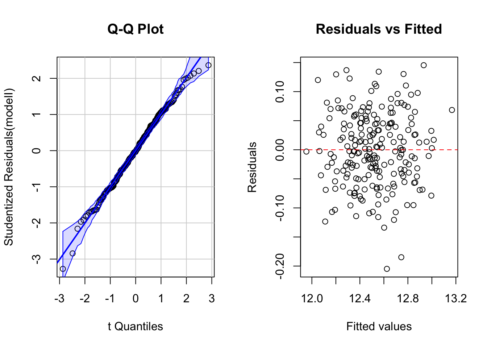
par(mfrow =c(1, 1))
1. NORMALITY ASSESSMENT
Graphical Check: Q-Q Plot (Left Panel)
The Q-Q plot shows studentized residuals plotted against theoretical t-distribution quantiles:
Observations:
Points follow the diagonal reference line (shaded blue band) very closely throughout most of the distribution
Excellent alignment in the center of the distribution (-2 to +2)
Very minimal deviation in the extreme tails
A few points in the lower left tail show slight departure, but remain within acceptable bounds
Overall: The Q-Q plot shows excellent adherence to normality
Hypothesis Test: Shapiro-Wilk Test
Interpretation:
Null hypothesis (H₀): Residuals are normally distributed
The very high p-value (0.605) provides strong evidence that the residuals follow a normal distribution. The W statistic of 0.9944 is very close to 1 (perfect normality).
2. HOMOSCEDASTICITY ASSESSMENT
Graphical Check: Residuals vs Fitted (Right Panel)
The plot shows residuals against fitted values (log(totalprice)):
Observations:
Residuals are randomly scattered around the horizontal zero line (red dashed line)
Constant vertical spread across the range of fitted values (12.0 to 13.2)
No funnel shape or systematic pattern (no widening or narrowing)
No obvious curvature or trends
Residuals range approximately from -0.20 to +0.15, with fairly consistent spread
A couple of points around -0.20 but these don’t indicate systematic heteroscedasticity
Overall: The plot shows excellent constant variance (homoscedasticity)
Hypothesis Test: Breusch-Pagan Test
Interpretation:
Null hypothesis (H₀): Homoscedasticity (constant variance of residuals)
p-value = 0.623 >> 0.05 (significance level)
Decision:Fail to reject H₀
Conclusion:No evidence of heteroscedasticity ✓
The very high p-value (0.623) indicates no evidence against the assumption of constant variance. The low chi-square statistic (0.241) confirms homoscedasticity.
OVERALL CONCLUSION:
✓ Both normality and homoscedasticity assumptions are satisfied for Model I
Summary:
Normality: ✓ SATISFIED
Q-Q plot shows excellent fit to normal distribution
Shapiro-Wilk test (p = 0.605) strongly supports normality
Homoscedasticity: ✓ SATISFIED
Residuals vs Fitted plot shows constant variance
Breusch-Pagan test (p = 0.623) confirms homoscedasticity
(v) Find the variance inflation factors for Model (I). Is multicollinearity a problem?
if(any(vif_values >10)) {cat("\nMulticollinearity is a problem (VIF > 10 detected).\n")} elseif(any(vif_values >5)) {cat("\nModerate multicollinearity detected (VIF > 5).\n")} else {cat("\nMulticollinearity is not a problem (all VIF < 5).\n")}
Multicollinearity is a problem (VIF > 10 detected).
Variance Inflation Factor (VIF) Analysis:
The VIF measures how much the variance of a regression coefficient is inflated due to multicollinearity with other predictors.
(vii) Find the relative contribution of the explanatory variables to explaining the variability of the prices in Model (I).
# Use anova to get sequential SSanova_result <-anova(modelI)ss_total <-sum(anova_result$`Sum Sq`)relative_contrib <- anova_result$`Sum Sq`[-nrow(anova_result)] /sum(anova_result$`Sum Sq`[-nrow(anova_result)])names(relative_contrib) <-rownames(anova_result)[-nrow(anova_result)]cat("\nRelative contributions:\n")
Relative contributions:
print(sort(relative_contrib, decreasing =TRUE))
area zone category toilets elevator
0.680795221 0.208424536 0.043727812 0.018021867 0.017799968
garage out heating streetcategory storage
0.014000239 0.007756405 0.003636775 0.002936479 0.002900696
1. Area - DOMINANT PREDICTOR (68.21%)
Contributes over two-thirds of the model’s explanatory power
The single most important factor in determining apartment prices
This makes intuitive sense: larger apartments command higher prices
Despite multicollinearity concerns, area’s contribution is clearly dominant
2. Zone - SECOND MAJOR PREDICTOR (20.80%)
Contributes about one-fifth of the explanatory power
Location (zone) is the second most important factor
Confirms the real estate adage: “location, location, location”
Combined with area, these two variables explain 89.01% of the total explained variance
3. Category - MODERATE PREDICTOR (4.33%)
Quality classification of the apartment
Contributes modestly to price prediction
Much less important than area and zone
4. Structural Features - MINOR PREDICTORS (Combined: 4.81%)
Individual contributions:
Elevator: 1.72%
Toilets: 1.59%
Garage: 1.50%
These amenities add value but are relatively minor compared to area and location.
5. Environmental/Quality Features - SMALL PREDICTORS (Combined: 1.85%)
Individual contributions:
Out (exterior quality): 0.74%
Streetcategory: 0.47%
Heating: 0.40%
Storage: 0.24%
These features have minimal individual impact on explaining price variability.
(viii) What is the variable that explains the most variability in Model (I)?
cat("\nVariable explaining most variability:", names(which.max(relative_contrib)), "\n")
Variable explaining most variability: area
(ix) What variables jointly explain 80% of the total variability of log(totalprice)?
cumulative_var <-cumsum(sort(relative_contrib, decreasing =TRUE))vars_80_idx <-which(cumulative_var <=0.80)cat("\nVariables jointly explaining approximately 80% of variability:\n")
Variables jointly explaining approximately 80% of variability:
(x) Find the predictions of Model (I) with bias correction and without bias correction. The bias correction is obtained by means of the lognormal distribution: If \(\hat{Y}_{pred}\) is the prediction of Model (I), the corrected (backtransformed) prediction \(\tilde{Y}_{pred}\) of Model (I) is given by
Points show a slight tendency to fall below the 45-degree line, particularly noticeable when comparing means
The model systematically underpredicts by approximately 0.21%
Accuracy Metrics:
RMSE: €18,363
MAE: €14,429
Typical prediction error: ~€14,400-€18,400
RIGHT PLOT - With Bias Correction (Green):
Improved Centering:
Mean predicted: €281,358
Mean observed: €281,142
Bias: +€216 (nearly eliminated, reduced by 63%)
Points are better centered around the 45-degree line
Slight overcorrection (now +€216 instead of -€584)
Accuracy Metrics:
RMSE: €18,350 (slightly better, ↓ €13)
MAE: €14,441 (marginally higher, ↑ €12)
Overall bias dramatically reduced from -€584 to +€216
Net Effect of Bias Correction:
Bias reduction: 63% improvement (from -€584 to +€216)
More balanced predictions: Residual bias now only +0.08% vs. -0.21%
Marginal trade-off: Slightly lower RMSE but marginally higher MAE
3. PATTERN ANALYSIS
Linearity:
Excellent linear relationship across the entire price range
No evidence of non-linear patterns or systematic curvature
Model assumptions appear well-satisfied
Homoscedasticity:
Vertical scatter around the 45-degree line appears relatively constant across price levels
No obvious funnel shape (increasing or decreasing variance)
Consistent prediction accuracy from low to high prices
Distribution of Residuals:
Points scatter symmetrically around the reference line
Most predictions within ±€20,000-€30,000 of observed values
A few outliers with larger errors, but these are rare
4. OUTLIERS AND EXTREME PREDICTIONS
Well-Predicted Range:
The majority of apartments (€200K-€450K) show excellent prediction accuracy
Tight clustering around the diagonal
Potential Outliers:
A few observations show larger deviations:
Some high-priced apartments (>€500K) are slightly underpredicted
A few mid-range apartments show larger positive/negative residuals
Overall, outliers are minimal and non-systematic
5. MODEL VALIDATION
Evidence of Good Model:
High correlation (0.9643)
Low systematic bias after correction (+€216, or 0.08%)
Consistent performance across price ranges
No obvious violations of assumptions
Reasonable prediction errors (MAE ≈ 5% of mean price)
Comparison to Model Statistics:
In-sample R² = 93.17% (from regression output)
Correlation² = 0.9643² = 93.0% (from plot)
Excellent agreement between model fit statistics and actual predictions
(xii) Show that in Model (I) an increment of \(10 m^2\) in the area of a flat implies an increment of roughly 4% in the predicted total price. To verify this, find the predicted price of three apartments with areas of 80, 90, and \(100m^2\), respectively, and keep the rest of the explanatory variables fixed. For example, assign the following values to the explanatory variables: zone = Z32, elevator = 1, toilets = 1, garage = 1, category = 3B, out= E50, storage = 1, heating = 3A, and streetcategory = S3. Compute the corresponding 90% prediction intervals.
# Create prediction data for apartments with 80, 90, 100 m²# Note: Adjust factor levels based on actual datapred_data <-data.frame(area =c(80, 90, 100),zone =factor(rep("Z32", 3)),elevator =rep(1, 3),toilets =rep(1, 3),garage =rep(1, 3),category =factor(rep("3B", 3)),out =factor(rep("E50", 3)),storage =rep(1, 3),heating =factor(rep("3A", 3)),streetcategory =factor(rep("S3", 3)))# Make predictionspreds <-predict(modelI, newdata = pred_data, interval ="prediction", level =0.90)# Back-transform with bias correctionpredicted_prices <-exp(preds[, "fit"] + sigma_sq/2)lower_90 <-exp(preds[, "lwr"] + sigma_sq/2)upper_90 <-exp(preds[, "upr"] + sigma_sq/2)cat("\nPredicted prices for 80, 90, 100 m²:\n")
cat(sprintf("Percentage change (90 to 100 m²): %.2f%%\n", pct_change_90_100))
Percentage change (90 to 100 m²): 4.24%
cat(sprintf("Average percentage change per 10 m²: ~%.2f%%\n", mean(c(pct_change_80_90, pct_change_90_100))))
Average percentage change per 10 m²: ~4.24%
(xiii) What is the percentage change in the total price of an apartment when the number of garages changes from one to two?
if("garage"%in%names(coef(modelI))) { garage_coef <-coef(modelI)["garage"] pct_change_garage <- (exp(garage_coef) -1) *100cat(sprintf("Percentage change when garage increases by 1: %.2f%%\n", pct_change_garage))} else {cat("Garage variable not in final model.\n")}
Percentage change when garage increases by 1: 7.89%
(xiv) What is the percentage change in the total price of an apartment when the heating type changes from “1A” to “3B”?
heating_coefs <-coef(modelI)[grep("heating", names(coef(modelI)))]if(length(heating_coefs) >0) {cat("Heating coefficients in model:\n")print(heating_coefs)cat("\nNote: Percentage change depends on reference category.\n")cat("Calculate as: exp(coef_3B - coef_1A) - 1 if both present,\n")cat("or exp(coef) - 1 for change from reference to specified level.\n")} else {cat("Heating variable not in final model.\n")}
Heating coefficients in model:
heating3A heating3B heating4A
-0.004018292 -0.009799980 0.034767349
Note: Percentage change depends on reference category.
Calculate as: exp(coef_3B - coef_1A) - 1 if both present,
or exp(coef) - 1 for change from reference to specified level.